<!doctype html>
<html lang="en">
<head>
  <meta charset="utf-8">
  <meta name="viewport" content="width=device-width, initial-scale=1">
  <title>arxiv digest — 2026-07-07</title>
  <style>
:root {
  --bg: #ffffff;
  --fg: #1f2328;
  --muted: #59636e;
  --border: #d0d7de;
  --card: #f6f8fa;
  --link: #0969da;
}
body {
  max-width: 980px;
  margin: 0 auto;
  padding: 2rem 1rem 5rem;
  font-family: -apple-system, BlinkMacSystemFont, "Segoe UI", Helvetica, Arial, sans-serif;
  line-height: 1.55;
  color: var(--fg);
  background: var(--bg);
}
a { color: var(--link); }
img { max-width: 100%; height: auto; }
pre, code { background: var(--card); border-radius: 6px; }
pre { padding: 1rem; overflow-x: auto; }
blockquote { border-left: 4px solid var(--border); padding-left: 1rem; color: var(--muted); }
details { margin: 0.6rem 0; }
summary { cursor: pointer; font-weight: 600; }
.paper-figures-scroll {
  display: flex;
  gap: 1rem;
  overflow-x: auto;
  overscroll-behavior-x: contain;
  padding: 0.75rem 0.25rem 1rem;
  margin: 1rem 0 1.25rem;
  border-top: 1px solid var(--border);
  border-bottom: 1px solid var(--border);
  scroll-snap-type: x proximity;
}
.paper-figure-card {
  flex: 0 0 min(260px, 72vw);
  scroll-snap-align: start;
  background: var(--card);
  border: 1px solid var(--border);
  border-radius: 12px;
  padding: 0.55rem;
}
.paper-figure-card img {
  display: block;
  width: 100%;
  max-height: 240px;
  object-fit: contain;
  background: white;
  border-radius: 8px;
}
.paper-figure-caption {
  display: block;
  margin-top: 0.5rem;
  color: var(--muted);
  font-size: 0.85rem;
}
.figure-strip-hint {
  color: var(--muted);
  font-size: 0.9rem;
  margin-bottom: -0.3rem;
}
</style>
  <!-- MathJax: renders $...$ inline math and $$...$$ display math, plus
       \(...\) and \[...\]. Loaded from the official CDN; works offline
       once cached. Configured to skip code/pre blocks so arxiv IDs that
       look like dollar amounts don't get mangled. -->
  <script>
    window.MathJax = {
      tex: {
        inlineMath: [['$', '$'], ['\\(', '\\)']],
        displayMath: [['$$', '$$'], ['\\[', '\\]']],
        processEscapes: true,
        processEnvironments: true
      },
      options: {
        skipHtmlTags: ['script', 'noscript', 'style', 'textarea', 'pre', 'code'],
        ignoreHtmlClass: 'tex2jax_ignore',
        processHtmlClass: 'tex2jax_process'
      }
    };
  </script>
  <script id="MathJax-script" async
    src="https://cdn.jsdelivr.net/npm/mathjax@3/es5/tex-chtml.js"></script>
</head>
<body>
<header style="background-color: #333; color: white; padding: 15px; margin-bottom: 20px;">
  <h1 style="margin: 0; font-size: 24px;">
    <a href="https://ochelpan.github.io/arXiv_clean/" style="color: white; text-decoration: none;">Main</a>
  </h1>
</header>

<h1>Daily arXiv Report</h1>

<hr>
<p>
<a href="index.html">← Index</a>
 · <a href="papers_03.html">← Previous</a> · <a href="papers_05.html">Next →</a>
</p>
<hr>

<h2>Papers 61–80</h2>
<p><a id="paper-2607.03534"></a></p>
<h3 id="fixed-point-tensor-network-for-compactified-boson-conformal-field-theory"><a href="http://arxiv.org/abs/2607.03534v1">Fixed-point tensor network for compactified boson conformal field theory</a></h3>
<p><strong>Authors:</strong> Gong Cheng, Dong-Yu Bao, Zheng-Cheng Gu<br>
<strong>Type:</strong> theory · <strong>Category:</strong> numerical methods · <strong>PDF:</strong> <a href="https://arxiv.org/pdf/2607.03534v1">https://arxiv.org/pdf/2607.03534v1</a><br>
<strong>Analysis basis:</strong> full PDF text, analyzed in chunks
<strong>Topic relevance:</strong> <code>methods for driven-dissipative</code> <strong>3/5</strong> · <code>Keldysh / 2PI / non-Gaussian methods</code> <strong>2/5</strong> · <code>analog quantum simulation</code> <strong>2/5</strong> · <code>driven-dissipative phase transition</code> <strong>2/5</strong> · <code>entanglement &amp; information structure</code> <strong>2/5</strong> · <code>non-equilibrium dynamics</code> <strong>2/5</strong> · <code>correlated / nonlocal dissipation</code> <strong>1/5</strong> · <code>correlated cavity matter</code> <strong>1/5</strong> · <code>non-equilibrium universality</code> <strong>1/5</strong></p>
<div class="figure-strip-hint">↔ Scroll figures horizontally</div>
<div class="paper-figures-scroll">
<figure class="paper-figure-card">

<figcaption class="paper-figure-caption"><b>Fig 1.</b> FIG. 1: Fixed-point tensor: (a) rank-3 tensor. (b) rank-4 tensor.</figcaption>
</figure>
<figure class="paper-figure-card">

<figcaption class="paper-figure-caption"><b>Fig 2.</b> FIG. 2: Closed-string conformal dimension from rank-3 FP tensor with growing descendants cutoff at R = 1.</figcaption>
</figure>
<figure class="paper-figure-card">

<figcaption class="paper-figure-caption"><b>Fig 3.</b> FIG. 3: RG spectrum obtained from the refined rank-3 FP tensor at R = 1, ΛD = 4, ΛN = 2, wmax = nmax = 2, χ = 20.</figcaption>
</figure>
<figure class="paper-figure-card">
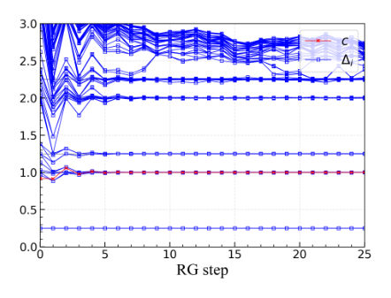
<figcaption class="paper-figure-caption"><b>Fig 4.</b> FIG. 4: RG spectrum obtained from the rank-4 FP tensor at R = 1, ΛD = 4, wmax = 2, χ = 20.</figcaption>
</figure>
<figure class="paper-figure-card">

<figcaption class="paper-figure-caption"><b>Fig 5.</b> FIG. 5: Change of the radius R when varying τ. τ = 0 corresponds to the radius R = 1.</figcaption>
</figure>
</div>

<p><strong>Summary.</strong> This paper develops a powerful fixed-point tensor network framework to discretize and analyze irrational Conformal Field Theories, specifically the compactified boson CFT. By constructing tensors from boundary correlation functions and applying renormalization group techniques, the authors accurately reproduce continuum spectra and demonstrate control over marginal deformations. This provides a concrete lattice approach for studying complex quantum field theories.</p>
<p><strong>Why it may be interesting.</strong> While focused on CFTs, the core methodology—using tensor networks (TCR) to simulate continuum physics and study RG flows—is highly relevant to numerical methods used in AMO physics for simulating quantum many-body systems or open quantum dynamics.</p>
<details>
<summary>Detailed structure</summary>
<p><strong>Main problem.</strong> The work aims to extend fixed-point (FP) tensor network constructions for Conformal Field Theories (CFTs) from tractable rational settings to the more complex irrational regime.</p>
<p><strong>Main result.</strong> The authors successfully construct and verify FP tensors for the 2D compactified boson CFT, demonstrating a lattice-level description that accurately reproduces the closed-string spectrum and allows for continuous marginal deformations along the c=1 moduli space.</p>
<p><strong>Method.</strong> They employ tensor network contractions (rank-3 and rank-4) within the Tensor Complex Renormalization (TCR) algorithm to map continuum CFT physics onto a discrete lattice representation.</p>
<p><strong>Model / system.</strong> The system studied is the 2D compactified boson theory, an archetypal irrational CFT relevant in string theory and condensed matter physics (like Luttinger liquids). The construction uses boundary data derived from Dirichlet and Neumann boundary conditions.</p>
<p><strong>Key observables.</strong> Closed-string spectrum ($\Delta$), central charge ($c$), and scaling dimensions ($\Delta$) extracted via transfer matrix diagonalization and TCR analysis.</p>
<p><strong>Important parameters / regimes.</strong> Compactification radius ($R$), finite grid sizes ($\Lambda_D, \Lambda_N$), and the deformation parameter $ au$ controlling marginal flow.</p>
<p><strong>Assumptions / limitations.</strong> The continuous nature of parameters is handled by discretizing them onto finite grids; convergence to the continuum limit requires retaining an increasing number of descendant states.</p>
<p><strong>Figures summary.</strong> Figures illustrate the RG spectrum obtained from both rank-3 and refined rank-4 FP tensors at specific radii, showing systematic recovery of the expected conformal dimensions. One figure also tracks how varying a geometric parameter ($    au$) induces continuous flow along the moduli space.</p>
<p><strong>Paper structure.</strong> The paper builds by first establishing the tensor structure using boundary correlation functions (rank-3/4). It then applies the TCR algorithm to verify stability and calculate spectra for specific radii, culminating in demonstrating controlled marginal deformations by modifying the geometry of the tensors.</p>
</details>
<details>
<summary>Abstract</summary>
<p>Fixed-point (FP) tensor networks provide a discrete spacetime representation of conformal field theories (CFTs), offering a new route toward understanding holographic duality, generalized symmetries, and even quantum gravity. In this work, we construct FP tensors for the 2D compactified boson theory at a generic compactification radius, an archetypal irrational CFT, using boundary (open-string) data with conformal boundary conditions. We show that the resulting tensors reproduce the closed-string spectrum with high accuracy and generate stable renormalization-group (RG) flows under the tensor complex renormalization algorithm. Moreover, we identify a controllable exactly marginal deformation at the level of a single tensor, enabling flows that move continuously along the $c=1$ moduli space. This framework establishes a concrete lattice-level route toward describing a broad class of 2D irrational CFTs.</p>
</details>
<p><sub><a href="#top">↑ back to top</a></sub></p>

<p><a id="paper-2607.05307"></a></p>
<h3 id="quantum-spectral-anomaly-detection"><a href="http://arxiv.org/abs/2607.05307v1">Quantum Spectral Anomaly Detection</a></h3>
<p><strong>Authors:</strong> Yewei Yuan, Michele Minervini, Mark M. Wilde, Nana Liu<br>
<strong>Type:</strong> both · <strong>Category:</strong> statistical mechanics · <strong>PDF:</strong> <a href="https://arxiv.org/pdf/2607.05307v1">https://arxiv.org/pdf/2607.05307v1</a><br>
<strong>Analysis basis:</strong> full PDF text, analyzed in chunks
<strong>Topic relevance:</strong> <code>driven-dissipative phase transition</code> <strong>3/5</strong> · <code>methods for driven-dissipative</code> <strong>3/5</strong> · <code>non-equilibrium universality</code> <strong>2/5</strong> · <code>quantum measurements</code> <strong>2/5</strong> · <code>Keldysh / 2PI / non-Gaussian methods</code> <strong>1/5</strong> · <code>analog quantum simulation</code> <strong>1/5</strong> · <code>correlated / nonlocal dissipation</code> <strong>1/5</strong> · <code>entanglement &amp; information structure</code> <strong>1/5</strong> · <code>measurement-induced transitions</code> <strong>1/5</strong> · <code>non-equilibrium dynamics</code> <strong>1/5</strong></p>
<div class="figure-strip-hint">↔ Scroll figures horizontally</div>
<div class="paper-figures-scroll">
<figure class="paper-figure-card">
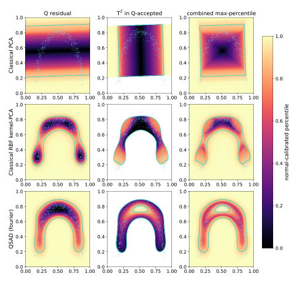
<figcaption class="paper-figure-caption"><b>Fig 1.</b> FIG. 1. Normal-calibrated percentile maps over [0, 1]2 for the moon dataset; the pale scattered points are the normal training data. Rows: linear classical PCA, RBF kernel-PCA, and QSPADE with a Fourier feature map. Columns: resid- ual Q, within-support T 2 (shown inside the Q-accepted re- gion), and the combined max-percentile. Linear PCA gives a rigid straight band; the kernel baseline and QSPADE both produce curved acceptance regions that follow the data. The cyan contour marks the calibrated decision boundary.</figcaption>
</figure>
<figure class="paper-figure-card">
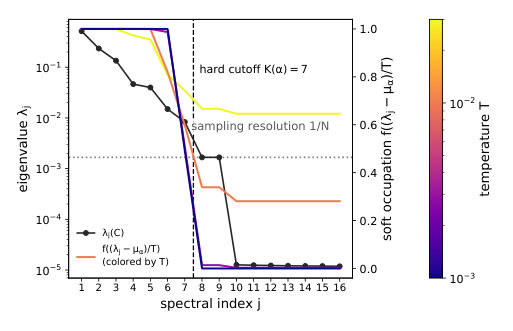
<figcaption class="paper-figure-caption"><b>Fig 2.</b> FIG. 2. Spectrum and soft occupations of the average nor- mal state C. Black points show the eigenvalues λj(C) on a log scale, and the dotted line marks the sampling reso- lution 1/N for N = 600. The vertical dashed line marks the hard retained-mass rank K(α) = 7 for α = 0.99. Col- ored curves, read on the right axis, show the soft occupations f((λj −µα)/T) for different resolutions T. The figure shows why a hard rank is ambiguous on this graded spectrum, while QSPADE assigns fractional weights to near-cutoff modes.</figcaption>
</figure>
<figure class="paper-figure-card">

<figcaption class="paper-figure-caption"><b>Fig 3.</b> FIG. 3. Mean residual anomaly score for each normal mode j, with the expected number of training samples wjN shown on the top axis, and for the anomaly class in the rightmost col- umn. Grey dashed curves are hard top-K projectors; colored curves are QSPADE residuals at different resolutions T. Hard ranks flip whole normal modes between zero and unit score, and become unstable when the cutoff reaches the sampling- resolution regime (K = 8). QSPADE replaces this all-or- nothing behavior by a graded transition from well-sampled modes to unresolved tail modes.</figcaption>
</figure>
<figure class="paper-figure-card">
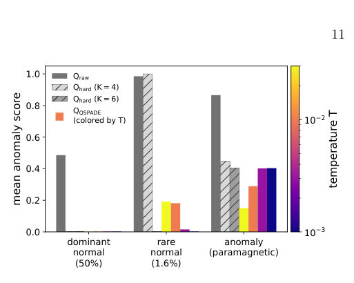
<figcaption class="paper-figure-caption"><b>Fig 4.</b> FIG. 4. Mean residual anomaly score for a dominant normal mode (50%), a rare normal mode (1.6%), and the paramag- netic anomaly class. The density-weighted Qraw and the hard K = 4 projector score the rare valid mode above the anomaly, while the hard K = 6 projector gives it zero score and hides its rarity. QSPADE assigns the rare mode an intermediate, temperature-dependent score; when T resolves the spectral tail, the rare valid mode remains below the anomaly. This shows soft scoring in QSPADE separates rarity within the normal support from genuine support mismatch.</figcaption>
</figure>
<figure class="paper-figure-card">
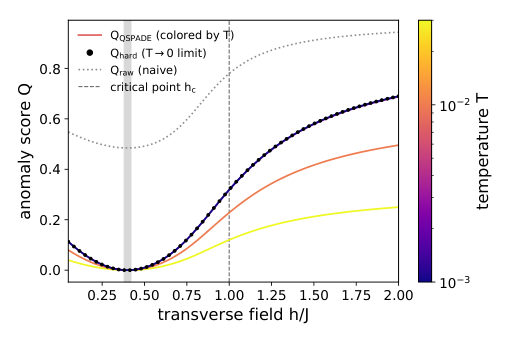
<figcaption class="paper-figure-caption"><b>Fig 5.</b> FIG. 5. QSPADE residual score of the TFIM ground state as the transverse field h is swept across the transition. The score is near zero at the normal training field hA = 0.4 (grey line), stays low in the ordered phase, and rises through the critical point hc = 1 (dashed) into the paramagnetic phase. Colored curves show different resolutions T; as T →0 they approach the hard retained-rank projector K(α) (black markers), while larger T gives a softer monitor. The density-weighted Qraw (dotted) is offset upward even at the normal field.</figcaption>
</figure>
</div>

<p><strong>Summary.</strong> This paper introduces QSPADE, a novel method for computing anomaly scores in quantum data by analyzing the spectrum of the average normal state. It replaces computationally expensive hard projections with a smooth, temperature-controlled spectral thresholding mechanism. This makes it an efficient tool for monitoring both encoded classical and native quantum systems across various physical transitions.</p>
<p><strong>Why it may be interesting.</strong> The ability to monitor complex physical transitions or detect deviations in quantum systems using spectral analysis without explicit knowledge of order parameters is highly valuable for characterizing non-equilibrium dynamics.</p>
<details>
<summary>Detailed structure</summary>
<p><strong>Main problem.</strong> The core task is developing an efficient method for quantum anomaly detection, which quantifies how much a test quantum state deviates from a known normal dataset.</p>
<p><strong>Main result.</strong> QSPADE provides a continuous and robust framework that computes PCA-like anomaly scores directly from the spectrum of the average normal state, avoiding costly full spectral decompositions.</p>
<p><strong>Method.</strong> The proposed Quantum Spectral Anomaly Detection (QSPADE) uses a regularized measurement-based detector that replaces hard rank selection with a smooth, temperature-controlled spectral threshold. This allows the score to vary continuously near component thresholds.</p>
<p><strong>Model / system.</strong> The method applies to quantum data represented by density operators ($
ho_i$) in a Hilbert space, allowing it to monitor physical systems undergoing phase transitions (e.g., transverse-field Ising model) without needing predefined order parameters.</p>
<p><strong>Key observables.</strong> Anomaly score ($Q$ or $T^2$), spectral components, and the average state $ar{
ho}$.</p>
<p><strong>Important parameters / regimes.</strong> Temperature parameter ($T$) controlling smoothness, spectral threshold ($\mu$), and desired retained mass ($\alpha$).</p>
<p><strong>Assumptions / limitations.</strong> The method assumes that the normal data support can be characterized by the spectrum of the average state. It is designed to bypass costs associated with full Gram matrix construction.</p>
<p><strong>Figures summary.</strong> Figures compare QSPADE against classical kernel-PCA baselines (RBF, polynomial) on synthetic datasets (moon, blob, ring), showing superior tracking of non-convex supports. A quantum experiment compares ROC-AUC vs resolution $T$, demonstrating that sharper detectors are more robust to shot noise.</p>
<p><strong>Paper structure.</strong> The paper develops theoretical proofs for the soft detector's properties and limits (Propositions III.2, IV.2, etc.). It then validates the method by comparing its performance against classical kernel methods on synthetic data and testing it on a quantum-native system undergoing a phase transition.</p>
</details>
<details>
<summary>Abstract</summary>
<p>A core task in quantum anomaly detection is to compute an anomaly score that quantifies how strongly a test quantum state deviates from a given quantum dataset assumed to be normal. Classically, principal component analysis (PCA) for centered data computes the anomaly score by evaluating the test sample relative to the subspace spanned by the selected leading eigenvectors. However, for quantum data that lack a standard centering, explicitly recovering principal eigenvectors, constructing full Gram matrices, or loading quantum-random-access-memory-style data can be more costly than estimating the anomaly score itself. To avoid these costs, we propose Quantum Spectral Anomaly Detection (QSPADE), which computes PCA-like anomaly scores directly from the spectrum of the average state of the normal dataset. By replacing hard PCA rank selection with a smooth, temperature-controlled spectral threshold, QSPADE makes near-threshold spectral components contribute partially to the anomaly score. This makes the score vary continuously rather than jump when a borderline component is included or excluded, and makes it less sensitive to noise or arbitrary hard cutoffs near the threshold. In the zero-temperature limit, QSPADE recovers the hard-projector PCA score. The proposed measurement-based quantum detector can be calibrated with a sample complexity independent of the data dimension. Numerical simulations show that QSPADE behaves like kernel-PCA on encoded classical data and detects changes across a transverse-field Ising transition without predefined order parameters. Consequently, QSPADE gives an efficient framework for both quantum-kernel anomaly detection on encoded classical data and the monitoring of quantum-native systems where diagnostic observables are unknown.</p>
</details>
<p><sub><a href="#top">↑ back to top</a></sub></p>

<p><a id="paper-2607.03753"></a></p>
<h3 id="efficient-analysis-of-carrier-transport-and-tm-te-emission-in-algan-uvc-leds-via-multi-band-localization-landscape-theory"><a href="http://arxiv.org/abs/2607.03753v1">Efficient Analysis of Carrier Transport and TM-TE Emission in AlGaN UVC LEDs via Multi-band Localization Landscape Theory</a></h3>
<p><strong>Authors:</strong> Yu-Ming Chang, Ping-Jie Zhuang, Marcel Filoche, Claude Weisbuch, James S. Speck, Yuh-Renn Wu<br>
<strong>Type:</strong> theory · <strong>Category:</strong> disordered systems and neural networks · <strong>PDF:</strong> <a href="https://arxiv.org/pdf/2607.03753v1">https://arxiv.org/pdf/2607.03753v1</a><br>
<strong>Analysis basis:</strong> full PDF text, analyzed in chunks
<strong>Topic relevance:</strong> <code>Keldysh / 2PI / non-Gaussian methods</code> <strong>3/5</strong> · <code>methods for driven-dissipative</code> <strong>3/5</strong> · <code>analog quantum simulation</code> <strong>2/5</strong> · <code>driven-dissipative phase transition</code> <strong>2/5</strong> · <code>non-equilibrium dynamics</code> <strong>2/5</strong> · <code>correlated / nonlocal dissipation</code> <strong>1/5</strong> · <code>correlated cavity matter</code> <strong>1/5</strong> · <code>non-equilibrium universality</code> <strong>1/5</strong></p>
<div class="figure-strip-hint">↔ Scroll figures horizontally</div>
<div class="paper-figures-scroll">
<figure class="paper-figure-card">

<figcaption class="paper-figure-caption"><b>Fig 1.</b> FIG. 1. (a) The band structure in GaN and AlN showing po- larization mode transitions from TE- to TM-dominant emis- sion as the valence band ground state changes from |X ± Y ⟩ to |Z⟩. (b) Schematic valence-band diagram of AlGaN with and without in-plane compressive stress. (c) When the com- pressive stress (deformation-potential term) is included in the QW, the valence-band edges (CH1–CH3) in the QW shift downward in energy, effectively making QW shallower as shown in (c).</figcaption>
</figure>
<figure class="paper-figure-card">
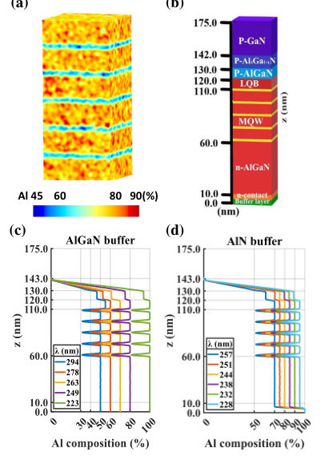
<figcaption class="paper-figure-caption"><b>Fig 2.</b> FIG. 2. (a) Three-dimensional aluminum composition distri- bution in AlGaN quantum wells based on the random alloy fluctuations. (b) The simulated structure shown is the MQW group with 2 nm AlGaN QW/10 nm AlGaN QB, 10 nm p-AlGaN and top 12 nm AlGaN graded-composition layer doped layer to help the hole carrier injection, and 33 nm p-GaN to form the ohmic contact with metal contact. (c) Vertical aluminum-composition profiles along the growth di- rection used with an AlGaN buffer for the five LED struc- tures, targeting emission at 294, 278, 263, 249, and 223 nm. (d) Vertical aluminum-composition profiles used with an AlN buffer for the six LED structures, targeting emission at 257, 251, 244,...</figcaption>
</figure>
<figure class="paper-figure-card">
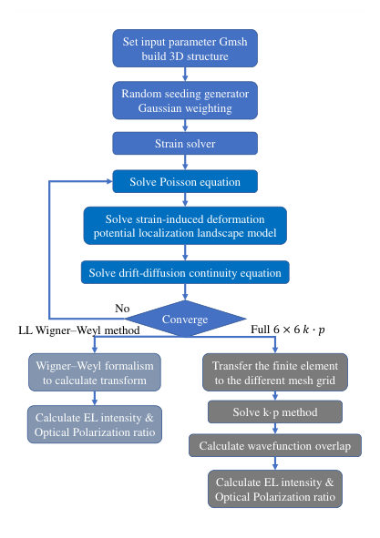
<figcaption class="paper-figure-caption"><b>Fig 3.</b> FIG. 3. Simulation flowchart of the 3D-DDCC program.</figcaption>
</figure>
<figure class="paper-figure-card">
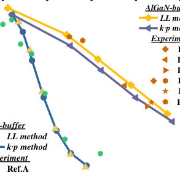
<figcaption class="paper-figure-caption"><b>Fig 4.</b> FIG. 4. Wavelength-dependent polarization ratio (220– 300 nm) of AlGaN UVC LEDs for AlGaN- and AlN-buffer cases. The LL (Wigner–Weyl) model matches the 6 × 6 k · p trend and reproduces the buffer-dependent TE-TM crossover, consistent with literature experiments. Among the experi- mental references, Ref. A (green point) is for the AlN-buffer case, whereas Refs. B–G (orange-brown point) are for the AlGaN-buffer case. (Ref. A43, Ref. B44, Ref. C45, Ref. D46, Ref. E47, Ref. F48, Ref. G49)</figcaption>
</figure>
<figure class="paper-figure-card">

<figcaption class="paper-figure-caption"><b>Fig 5.</b> FIG. 5. TE- and TM-resolved optical spectra calculated us- ing the (a) LL and (b) k · p methods for the AlGaN-buffer structure.</figcaption>
</figure>
</div>

<p><strong>Summary.</strong> This work introduces an efficient Multi-band Localization Landscape model to simulate carrier transport in AlGaN UVC LEDs. It overcomes the computational bottleneck of traditional k.p methods by replacing eigenvalue solutions with a landscape approach, while accurately incorporating critical physical effects like strain and alloy disorder. The method provides a fast yet reliable tool for optimizing deep-UV emitter performance.</p>
<p><strong>Why it may be interesting.</strong> While focused on solid-state devices, the core methodology—using a simplified landscape approach (LL) to capture complex quantum effects (localization, disorder) without solving massive eigenvalue problems—is highly relevant for modeling open quantum systems or strongly interacting many-body physics where full diagonalization is prohibitive.</p>
<details>
<summary>Detailed structure</summary>
<p><strong>Main problem.</strong> The primary challenge is efficiently modeling carrier transport and emission polarization in AlGaN UVC LEDs, which are complicated by poor hole confinement, strain effects, and random alloy disorder.</p>
<p><strong>Main result.</strong> The proposed Multi-band Localization Landscape (LL) model significantly reduces simulation time compared to conventional k.p methods while accurately reproducing spectral trends and polarization ratios across a wide range of conditions.</p>
<p><strong>Method.</strong> A hybrid approach combining the LL model with the Wigner–Weyl formalism is used within a 3D drift-diffusion framework, replacing computationally expensive eigenvalue problems.</p>
<p><strong>Model / system.</strong> The system is an AlGaN/AlN quantum well structure operating in the deep-UV range. The modeling incorporates strain effects (via piezoelectricity and deformation potential) and random alloy fluctuations to describe carrier localization and transport.</p>
<p><strong>Key observables.</strong> Emission and absorption spectra, polarization ratio (TE/TM), band structure evolution, hole/electron current densities, and device electrical characteristics (J-V curves).</p>
<p><strong>Important parameters / regimes.</strong> High Al content (&gt;60%), compressive strain, alloy fluctuation magnitude, and operating wavelength ($\lambda$ from 223 nm to 294 nm).</p>
<p><strong>Assumptions / limitations.</strong> The LL model is assumed to provide an accurate quantum description by replacing the full Schrödinger eigenvalue problem; the framework relies on a self-consistent solution of Poisson and drift-diffusion equations.</p>
<p><strong>Figures summary.</strong> Figures illustrate band structure transitions based on polarization (TE vs. TM), show how strain modifies the valence band ground state, and compare carrier/current densities with and without the inclusion of strain-induced deformation terms.</p>
<p><strong>Paper structure.</strong> The paper introduces the physical problem in UVC LEDs, details the limitations of existing k.p methods, proposes the LL model as an efficient alternative, validates its accuracy against full calculations, and applies it to analyze polarization switching and carrier confinement under realistic material stresses.</p>
</details>
<details>
<summary>Abstract</summary>
<p>AlGaN-based UVC LEDs (220-250 nm) suffer from poor hole confinement and strain-induced |Z&gt;-band dominance at high Al content (&gt;60%), leading to increased TM emission and reduced external quantum efficiency (EQE). While conventional k.p models combined with Schrodinger, Poisson, and drift-diffusion solvers are widely used to study optical transitions, they are computationally expensive. In this work, we apply the multiband Localization Landscape (LL) model, including the effect of strain, as an alternative that replaces the eigenvalue problem to efficiently capture quantum effects and carrier localization. Using the 3D multi-band LL model with the Wigner-Weyl formalism, we reproduce emission and absorption spectra trends similar to the results in 3D k.p calculations, but with significantly reduced simulation time. The polarization ratio also agrees well with published experimental results across a wide spectral range. Furthermore, we analyze electrical characteristics such as band structure, polarization switching, and carrier confinement under alloy fluctuations and strain. This multi-band LL-based approach provides a fast and reliable solution for understanding and optimizing UVC LED performance.</p>
</details>
<p><sub><a href="#top">↑ back to top</a></sub></p>

<p><a id="paper-2607.03757"></a></p>
<h3 id="entanglement-assisted-timing-optimization-for-discriminating-amplitude-damping-dynamics"><a href="http://arxiv.org/abs/2607.03757v1">Entanglement-Assisted Timing Optimization for Discriminating Amplitude-Damping Dynamics</a></h3>
<p><strong>Authors:</strong> Massimiliano F. Sacchi, Milajiguli Rexiti, Stefano Mancini<br>
<strong>Type:</strong> theory · <strong>Category:</strong> quantum information and computing · <strong>PDF:</strong> <a href="https://arxiv.org/pdf/2607.03757v1">https://arxiv.org/pdf/2607.03757v1</a><br>
<strong>Analysis basis:</strong> full PDF text, analyzed in chunks
<strong>Topic relevance:</strong> <code>correlated / nonlocal dissipation</code> <strong>3/5</strong> · <code>entanglement &amp; information structure</code> <strong>3/5</strong> · <code>methods for driven-dissipative</code> <strong>3/5</strong> · <code>driven-dissipative phase transition</code> <strong>2/5</strong> · <code>non-equilibrium dynamics</code> <strong>2/5</strong> · <code>Keldysh / 2PI / non-Gaussian methods</code> <strong>1/5</strong> · <code>non-equilibrium universality</code> <strong>1/5</strong></p>
<div class="figure-strip-hint">↔ Scroll figures horizontally</div>
<div class="paper-figures-scroll">
<figure class="paper-figure-card">
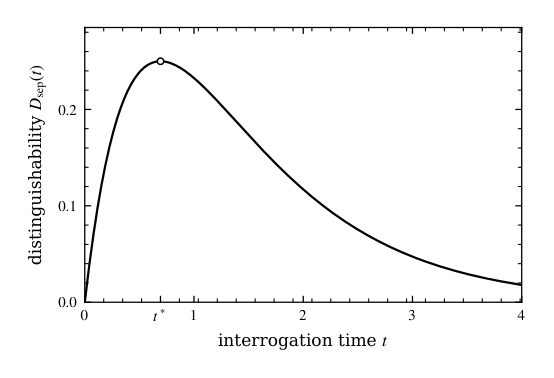
<figcaption class="paper-figure-caption"><b>Fig 1.</b> FIG. 1: Interior-branch timing for the rates in Eq. (57). The unassisted distinguishability reaches its maximum D∗ sep = 1/4 at t∗= log 2. Side entanglement gives no improvement in this example.</figcaption>
</figure>
<figure class="paper-figure-card">

<figcaption class="paper-figure-caption"><b>Fig 2.</b> FIG. 2: Boundary-branch timing for the rates in Eq. (61). The finite maximum occurs at t∗ −≃0.6286, and side entanglement gives no improvement because ζ(t) = 0.</figcaption>
</figure>
<figure class="paper-figure-card">

<figcaption class="paper-figure-caption"><b>Fig 3.</b> FIG. 3: Minimum error probability versus interrogation time for the rates in Eq. (63). The unassisted infimum p∗ E = 0.3 is reached only asymptotically, whereas the entanglement-assisted strategy reaches a smaller error probability ep ∗ E ≃0.2858 at the finite time t∗≃1.4508.</figcaption>
</figure>
<figure class="paper-figure-card">

<figcaption class="paper-figure-caption"><b>Fig 4.</b> FIG. 4: Threshold example for discriminating the damping process (1, 1, 0) from the pure-dephasing process (0, 0, r), with representative value r = 0.1 &lt; rc. The unassisted infimum is p∗ E = 1/4, while the assisted strategy reaches the smaller value ep ∗ E ≃0.2432 at finite time.</figcaption>
</figure>
<figure class="paper-figure-card">

<figcaption class="paper-figure-caption"><b>Fig 5.</b> FIG. 5: Entanglement advantage from Proposition 1(iii) for the rates in Eq. (72). The assisted value at finite time is larger than the globally optimized unassisted value.</figcaption>
</figure>
</div>

<p><strong>Summary.</strong> This paper analyzes how to best distinguish between two noisy qubit dynamics (amplitude-damping channels) by optimizing both the input probe state and the measurement time. It rigorously proves that utilizing initial entanglement can yield a measurable, finite-time advantage over any strategy using only unentangled probes. This highlights the practical utility of quantum resources in characterizing open quantum systems.</p>
<p><strong>Why it may be interesting.</strong> This work is highly relevant as it pushes the boundaries of quantum process tomography and channel discrimination by quantifying the precise resource benefit provided by initial entanglement in open quantum system settings.</p>
<details>
<summary>Detailed structure</summary>
<p><strong>Main problem.</strong> The paper addresses the minimum-error discrimination of two distinct qubit dynamical processes generated by phase-covariant amplitude-damping Lindbladians.</p>
<p><strong>Main result.</strong> Entanglement assistance can provide a strictly smaller error probability at finite time compared to the best unassisted strategy, and this advantage can persist even when considering global optimization over interrogation time.</p>
<p><strong>Method.</strong> The authors use quantum information theory tools, comparing trace-norm distinguishability (unassisted) against diamond-norm distinguishability (entangled), optimizing over input states and interrogation time $t$.</p>
<p><strong>Model / system.</strong> The system involves two qubits undergoing dynamics governed by a phase-covariant amplitude-damping Lindbladian master equation. The evolution is analyzed via its effect on the Bloch vector.</p>
<p><strong>Key observables.</strong> Trace-norm distinguishability ($D_{	ext{sep}}(t)$) and diamond-norm distinguishability ($D_{	ext{ent}}(t)$), which quantify the minimum error probability for discrimination.</p>
<p><strong>Important parameters / regimes.</strong> Interrogation time ($t$), damping rates ($\gamma_\pm, \gamma_z$), and the entanglement parameterization via a one-parameter Schmidt family.</p>
<p><strong>Assumptions / limitations.</strong> The analysis focuses on single-use scenarios and distinguishes between fixed-time advantages and globally optimized timing advantages over $t$.</p>
<p><strong>Figures summary.</strong> Figures illustrate numerical examples demonstrating finite-time advantages ($e^*_E < p^*_E$) where the entangled strategy outperforms the unassisted one, particularly in regimes governed by specific conditions on damping rates.</p>
<p><strong>Paper structure.</strong> The paper first establishes the general framework for discrimination using both unassisted and entanglement-assisted measures. It then derives explicit formulas for fixed time $t$ based on different optimal input state branches (interior vs. boundary). Finally, it compares the optimized results to show when and how entanglement provides a measurable advantage over classical or unassisted quantum measurements.</p>
</details>
<details>
<summary>Abstract</summary>
<p>We analyze minimum-error discrimination of two qubit dynamical processes generated by phase-covariant amplitude-damping Lindbladians in a single-use scenario. The optimization involves both the input probe, possibly entangled with an isolated ancilla, and the interrogation time. For unassisted probes we obtain a closed expression for the optimal trace-norm distinguishability at fixed time, with distinct interior and boundary branches. For entanglement-assisted probes, the common phase covariance of the two channels reduces the diamond-norm optimization to a one-parameter Schmidt family. The resulting formula gives transparent sufficient conditions for fixed-time entanglement advantage and separates this local advantage from advantage after global optimization over time. We exhibit examples in which the best unassisted strategy is approached only asymptotically, whereas an entangled probe achieves a strictly smaller error probability at finite time.</p>
</details>
<p><sub><a href="#top">↑ back to top</a></sub></p>

<p><a id="paper-2607.04295"></a></p>
<h3 id="optimal-estimation-of-quantum-boundary-effect-in-cosmic-string-space-time"><a href="http://arxiv.org/abs/2607.04295v1">Optimal estimation of quantum boundary effect in cosmic string space-time</a></h3>
<p><strong>Authors:</strong> Yao Jin<br>
<strong>Type:</strong> theory · <strong>Category:</strong> other · <strong>PDF:</strong> <a href="https://arxiv.org/pdf/2607.04295v1">https://arxiv.org/pdf/2607.04295v1</a><br>
<strong>Analysis basis:</strong> full PDF text, analyzed in chunks
<strong>Topic relevance:</strong> <code>quantum measurements</code> <strong>3/5</strong> · <code>correlated / nonlocal dissipation</code> <strong>2/5</strong> · <code>measurement-induced transitions</code> <strong>2/5</strong> · <code>methods for driven-dissipative</code> <strong>2/5</strong> · <code>Keldysh / 2PI / non-Gaussian methods</code> <strong>1/5</strong> · <code>Tavis-Cummings &amp; cavity-many-emitter</code> <strong>1/5</strong> · <code>analog quantum simulation</code> <strong>1/5</strong> · <code>driven-dissipative phase transition</code> <strong>1/5</strong> · <code>entanglement &amp; information structure</code> <strong>1/5</strong> · <code>non-equilibrium dynamics</code> <strong>1/5</strong></p>
<div class="figure-strip-hint">↔ Scroll figures horizontally</div>
<div class="paper-figures-scroll">
<figure class="paper-figure-card">

<figcaption class="paper-figure-caption"><b>Fig 1.</b> FIG. 1: f as a function of 4Aτ with cos θ = 1 and sin θ = ±1.</figcaption>
</figure>
<figure class="paper-figure-card">

<figcaption class="paper-figure-caption"><b>Fig 2.</b> FIG. 2: Fz/τ as a function of z for in cases of parallel and vertical polarization respectively.</figcaption>
</figure>
<figure class="paper-figure-card">
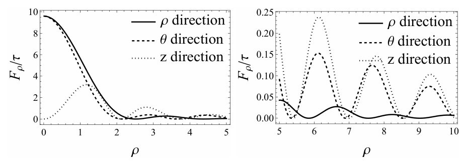
<figcaption class="paper-figure-caption"><b>Fig 3.</b> FIG. 3: Fρ/τ as a function of ρ in cases with ρ, θ and z polarization direction when ν = 2.</figcaption>
</figure>
<figure class="paper-figure-card">

<figcaption class="paper-figure-caption"><b>Fig 4.</b> FIG. 4: Fρ/τ as a function of ρ in cases with ρ, θ and z polarization direction when</figcaption>
</figure>
</div>

<p><strong>Summary.</strong> This theoretical paper develops a quantum metrology framework to estimate position-dependent effects caused by cosmic strings or reflecting boundaries on an atom's vacuum fluctuations. By optimizing measurement protocols and initial states, the authors derive specific precision limits for these estimations in both boundary and curved spacetime geometries.</p>
<p><strong>Why it may be interesting.</strong> This work directly applies advanced concepts from quantum optics and open quantum systems (master equations) to fundamental physics problems in general relativity/cosmology, providing concrete metrological bounds on physical parameters like string separation.</p>
<details>
<summary>Detailed structure</summary>
<p><strong>Main problem.</strong> The paper addresses the optimal estimation of quantum boundary effects induced by a cosmic string on vacuum fluctuations experienced by a two-level polarizable atom.</p>
<p><strong>Main result.</strong> The optimal measurement strategy and polarization direction depend critically on whether the geometry is a reflecting boundary or a cosmic string, with specific optimal choices identified for different separation regimes.</p>
<p><strong>Method.</strong> It employs quantum metrology principles, utilizing repeated measurements ($N$) and maximum-likelihood estimation to determine the precision limit of position factor estimation.</p>
<p><strong>Model / system.</strong> The system involves a two-level polarizable atom interacting with the electromagnetic field in spacetimes modified by either an infinite conducting reflecting boundary or a static cosmic string. The dynamics are governed by an effective Hamiltonian and described by the Kossakowski-Lindblad master equation.</p>
<p><strong>Key observables.</strong> Estimation precision, quantified by the variance $ ext{Var}(X)$, which is bounded by $1/(N F_X)$.</p>
<p><strong>Important parameters / regimes.</strong> Atom-string separation ($
ho$ or $z$), deficit angle, and the total probe time ($T$).</p>
<p><strong>Assumptions / limitations.</strong> The analysis assumes a weak coupling regime and utilizes sequential measurements on a single probe atom to estimate position factors.</p>
<p><strong>Figures summary.</strong> Figure 1 illustrates how the estimation factor decreases with increasing probe time ($ au$). Figure 2 compares sensitivity for parallel vs. vertical polarization in the reflecting boundary case, while Figures 3 and 4 compare sensitivities ($F/ au$) across different polarizations ($
ho$, $  heta$, $z$) depending on separation ($
ho$) and string parameter ($
u$).</p>
<p><strong>Paper structure.</strong> The paper first establishes the general quantum metrology framework. It then analyzes two distinct physical scenarios: the flat space with a reflecting boundary, and the cosmic string spacetime. In both cases, it optimizes initial states, measurement bases, and probe times to determine the best achievable estimation precision.</p>
</details>
<details>
<summary>Abstract</summary>
<p>The presence of a cosmic string modifies vacuum fluctuations, making the evolution of a two-level polarizable atom position dependent. Such modifications produce effects on the atomic dynamics analogous to those induced by a reflecting boundary. We show that these quantum boundary effects can be estimated by performing a sequence of $N$ measurements on a single probe atom. For a fixed total probe time, the precision limit is attained by preparing each probe in its optimal initial state, performing the corresponding optimal measurement, and shortening the probe time of each probe. The optimal measurement is uniquely determined by the probe's initial state, and the precision limit obtained with the atom initially in the excited state is four times higher than that for an equal-weight superposition state. The estimation precision displays damped oscillatory behavior as the atom-boundary or atom-string separation increases. While polarization parallel to the reflecting boundary is always optimal in the boundary case, the optimal polarization in cosmic-string space-time depends on both the atom-string separation and the deficit angle. For small deficit angles and sufficiently large separations, polarization along the cosmic-string direction becomes inferior to the other polarization directions.</p>
</details>
<p><sub><a href="#top">↑ back to top</a></sub></p>

<p><a id="paper-2607.05173"></a></p>
<h3 id="semi-markovian-switching-in-a-fluctuating-harmonic-trap-an-age-structured-formulation"><a href="http://arxiv.org/abs/2607.05173v1">Semi-Markovian switching in a fluctuating harmonic trap: An age-structured formulation</a></h3>
<p><strong>Authors:</strong> Derek Frydel<br>
<strong>Type:</strong> theory · <strong>Category:</strong> statistical mechanics · <strong>PDF:</strong> <a href="https://arxiv.org/pdf/2607.05173v1">https://arxiv.org/pdf/2607.05173v1</a><br>
<strong>Analysis basis:</strong> full PDF text, analyzed in chunks
<strong>Topic relevance:</strong> <code>driven-dissipative phase transition</code> <strong>3/5</strong> · <code>methods for driven-dissipative</code> <strong>3/5</strong> · <code>non-equilibrium dynamics</code> <strong>3/5</strong> · <code>non-equilibrium universality</code> <strong>2/5</strong> · <code>Frenkel-Kontorova</code> <strong>1/5</strong> · <code>Keldysh / 2PI / non-Gaussian methods</code> <strong>1/5</strong> · <code>analog quantum simulation</code> <strong>1/5</strong> · <code>correlated / nonlocal dissipation</code> <strong>1/5</strong></p>
<div class="figure-strip-hint">↔ Scroll figures horizontally</div>
<div class="paper-figures-scroll">
<figure class="paper-figure-card">

<figcaption class="paper-figure-caption"><b>Fig 1.</b> FIG. 1. Parameter A as a function of the shape parameter k for the Gamma, power-law, and intermittent two-point waiting-time distri- butions. The horizontal dashed lines correspond to the deterministic upper bound Amax = tanh(1) ≈0.7616 and the memoryless (expo- nential) value Aexp = 0.5. Parameters: τK1 = τK2 = τ1 = τ2 = 1.</figcaption>
</figure>
<figure class="paper-figure-card">

<figcaption class="paper-figure-caption"><b>Fig 2.</b> FIG. 2. Injected power ⟨˙W⟩as a function of K1 for the Gamma, power-law, and two-point waiting-time distributions. As K1 →0, all curves converge to the universal stochastic-resetting limit ⟨˙W⟩= DK τoff/(τoff +τon). Parameters: µK2 = τoff = τon = kBT = 1.</figcaption>
</figure>
<figure class="paper-figure-card">

<figcaption class="paper-figure-caption"><b>Fig 3.</b> FIG. 3. Variance-space distributions pi(s) for exponential, de- terministic, and algebraic waiting-time distributions. Parameters: τK = τoff = τon = kBT = 1. For the algebraic case, we use roff from Eq. (42) with k = 3, corresponding to C = 2 and therefore poff(s) ∼2s−2.</figcaption>
</figure>
<figure class="paper-figure-card">
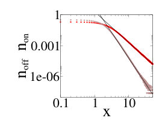
<figcaption class="paper-figure-caption"><b>Fig 4.</b> FIG. 4. Spatial distributions ni(x) shown on a log-log scale for algebraic waiting-time distributions corresponding to Eq. (42) with k = 3. Parameters: τK = τoff = τon = D = 1, for which noff(x) ∼ 2|x|−3 and non(x) ∼6|x|−5.</figcaption>
</figure>
</div>

<p><strong>Summary.</strong> This paper develops a comprehensive theoretical framework using age-structured methods to model Brownian particles undergoing switching between harmonic traps with arbitrary memory effects. It derives exact integral equations for steady states and demonstrates that while equilibrium energy remains fixed, non-Markovian switching protocols significantly alter the injected power and spatial fluctuations. This work is valuable for understanding non-equilibrium dynamics in systems with complex temporal correlations.</p>
<p><strong>Why it may be interesting.</strong> It provides rigorous mathematical tools (age-structuring, variance dynamics) to analyze non-equilibrium transport phenomena driven by complex temporal correlations, which is highly relevant for understanding energy dissipation in open quantum systems or active matter.</p>
<details>
<summary>Detailed structure</summary>
<p><strong>Main problem.</strong> Developing a general theoretical framework for analyzing semi-Markovian switching dynamics in fluctuating potentials with arbitrary waiting-time distributions.</p>
<p><strong>Main result.</strong> The study derives exact integral equations and shows that while average potential energy remains at equilibrium values, injected power and spatial fluctuations are highly sensitive to the temporal memory encoded in the switching statistics.</p>
<p><strong>Method.</strong> The core methodology involves formulating the problem in an enlarged age-structured state space to restore Markovianity for non-exponential waiting times, followed by analyzing reduced dynamics in both position and variance spaces.</p>
<p><strong>Model / system.</strong> A Brownian particle confined by a harmonic trap whose stiffness fluctuates between two values ($K_1$ and $K_2$), leading to semi-Markovian switching dynamics. The analysis covers regimes from memoryless Markovian processes to complex stochastic-resetting limits.</p>
<p><strong>Key observables.</strong> Steady-state spatial density ($
ho_i(x)$), birth flux ($b_i(x)$), average potential energy (PE), and injected work rate ($\langle \dot{W} 
angle$).</p>
<p><strong>Important parameters / regimes.</strong> Mean residence times ($ au_i$), stiffness values ($K_1, K_2$), and memory parameters encoded in the waiting-time distributions.</p>
<p><strong>Assumptions / limitations.</strong> The framework assumes finite mean residence times for the switching process; energy observables are governed by a generalized virial relation.</p>
<p><strong>Figures summary.</strong> Figures illustrate $\pi(s)$ (variance distribution) comparisons for exponential, deterministic, and algebraic waiting-time protocols, and show spatial distributions $n_i(x)$ confirming asymptotic predictions for algebraic tails.</p>
<p><strong>Paper structure.</strong> The paper first establishes the age-structured Fokker-Planck description to handle memory. It then analyzes steady-state observables (moments, fluxes) in this extended space. Finally, it tackles specific limits, notably the variance-space formulation for stochastic resetting and analyzing moment equations.</p>
</details>
<details>
<summary>Abstract</summary>
<p>We study a Brownian particle in a harmonic trap whose stiffness switches between two values with arbitrary waiting-time statistics, generating semi-Markovian dynamics. To treat the resulting temporal memory, we formulate the problem in an enlarged age-structured state space, restoring Markovianity and yielding a local Fokker--Planck description. Within this framework, we derive exact steady-state integral equations for the spatial and birth distributions and obtain exact expressions for stationary moments, injected power, and potential energy. In the second part of the paper, we analyze the stochastic-resetting limit, corresponding to a particle alternately released and trapped. By representing the stationary spatial distribution as a superposition of Gaussian states with fluctuating variance, the problem can be reformulated as a switching process in variance space. This yields exact integral equations for the variance distributions and leads to a simplified description amenable to direct analytical treatment.</p>
</details>
<p><sub><a href="#top">↑ back to top</a></sub></p>

<p><a id="paper-2607.03605"></a></p>
<h3 id="minimal-proper-time-and-deterministic-microstates-emergent-quantum-fields-and-relativistic-spacetime"><a href="http://arxiv.org/abs/2607.03605v1">Minimal Proper Time and Deterministic Microstates: Emergent Quantum Fields and Relativistic Spacetime</a></h3>
<p><strong>Authors:</strong> Alessio Maiezza<br>
<strong>Type:</strong> theory · <strong>Category:</strong> other · <strong>PDF:</strong> <a href="https://arxiv.org/pdf/2607.03605v1">https://arxiv.org/pdf/2607.03605v1</a><br>
<strong>Analysis basis:</strong> full PDF text, analyzed in chunks
<strong>Topic relevance:</strong> <code>Keldysh / 2PI / non-Gaussian methods</code> <strong>3/5</strong> · <code>entanglement &amp; information structure</code> <strong>2/5</strong> · <code>methods for driven-dissipative</code> <strong>2/5</strong> · <code>non-equilibrium dynamics</code> <strong>2/5</strong> · <code>analog quantum simulation</code> <strong>1/5</strong> · <code>correlated / nonlocal dissipation</code> <strong>1/5</strong> · <code>correlated cavity matter</code> <strong>1/5</strong> · <code>driven-dissipative phase transition</code> <strong>1/5</strong> · <code>non-equilibrium universality</code> <strong>1/5</strong></p>
<div class="figure-strip-hint">↔ Scroll figures horizontally</div>
<div class="paper-figures-scroll">
<figure class="paper-figure-card">

<figcaption class="paper-figure-caption"><b>Fig 1.</b> Low-resolution page preview, page 2</figcaption>
</figure>
<figure class="paper-figure-card">

<figcaption class="paper-figure-caption"><b>Fig 2.</b> Low-resolution page preview, page 3</figcaption>
</figure>
<figure class="paper-figure-card">

<figcaption class="paper-figure-caption"><b>Fig 3.</b> Low-resolution page preview, page 4</figcaption>
</figure>
<figure class="paper-figure-card">
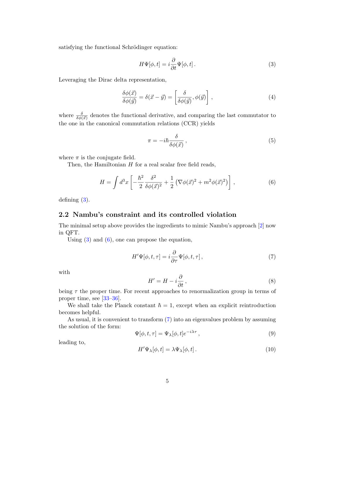
<figcaption class="paper-figure-caption"><b>Fig 4.</b> Low-resolution page preview, page 5</figcaption>
</figure>
<figure class="paper-figure-card">
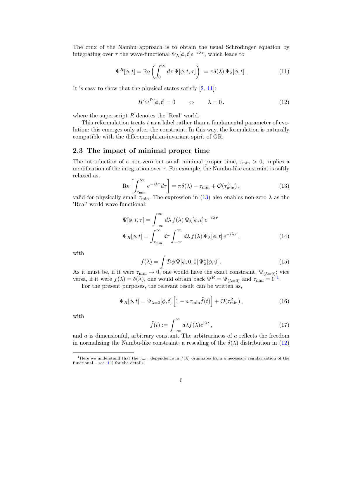
<figcaption class="paper-figure-caption"><b>Fig 5.</b> Low-resolution page preview, page 6</figcaption>
</figure>
</div>

<p><strong>Summary.</strong> This work proposes a fundamental theory where quantum fields and relativistic spacetime emerge from a deeper, underlying deterministic structure. By analyzing how coarse-graining occurs over microscopic histories, the authors show that standard QFT and Einstein's equations are recovered as low-energy approximations of this fundamental substrate.</p>
<p><strong>Why it may be interesting.</strong> While not directly focused on AMO systems, the concept of deriving continuous quantum dynamics and spacetime geometry from discrete, deterministic microstates is highly relevant to foundational questions in quantum gravity that underpin many-body physics theories.</p>
<details>
<summary>Detailed structure</summary>
<p><strong>Main problem.</strong> The paper aims to develop a top-down derivation of quantum field theory (QFT) and emergent relativistic spacetime from a fundamental, deterministic pre-geometric substrate.</p>
<p><strong>Main result.</strong> Coarse-graining over microscopic histories recovers standard unitary QFT in the infrared limit and yields an effective metric compatible with Einstein gravity in the macroscopic limit.</p>
<p><strong>Method.</strong> The approach involves analyzing the dynamics induced by coarse-graining on a deterministic substrate, relating it to minimal proper time steps ($   au_{    ext{min}}$) and deriving emergent field equations via linear response theory.</p>
<p><strong>Model / system.</strong> The model starts with a deterministic pre-geometric substrate of causally ordered events. Dynamics are studied by mapping the evolution onto an effective Nambu-like quantum dynamics, which then dictates the structure of spacetime geometry.</p>
<p><strong>Key observables.</strong> Effective Planck constant ($\hbar_{eff}$), emergent metric components ($g_{\mu
u}$), and stress-energy tensor ($T_{\mu
u}$).</p>
<p><strong>Important parameters / regimes.</strong> Minimal proper time ($  au_{    ext{min}}$), scale parameter ($\eta = 1/n$), and the running effective Planck constant.</p>
<p><strong>Assumptions / limitations.</strong> The derivation assumes standard infrared assumptions (locality, diffeomorphism covariance) to select Einstein gravity in the macroscopic limit; the metric is derived from weighted covariances of coordinate fluctuations.</p>
<p><strong>Figures summary.</strong> Not specified by notes, but calculations involve deriving components of the Ricci tensor and solving for stress-energy tensor components based on a function $q(x)$ derived from local cardinalities.</p>
<p><strong>Paper structure.</strong> The paper progresses from establishing the deterministic substrate dynamics via coarse-graining (leading to Nambu-like QFT) to demonstrating how this structure naturally yields an effective metric compatible with Einstein's equations in the continuum limit.</p>
</details>
<details>
<summary>Abstract</summary>
<p>We develop a top-down counterpart of the minimal proper-time formulation of quantum field theory previously introduced as an effective bottom-up framework. Starting from a deterministic pre-geometric substrate of causally ordered events, we show how coarse-graining over microscopic histories leads, at low energies, to an effective Nambu-like quantum dynamics. The elementary deterministic update is identified with the minimal proper-time step, while the growth of coarse-grained equivalence classes controls both the ultraviolet dissipative correction and the scale dependence of the effective quantization strength, encoded in a running Planck constant. In this way, the proper-time cutoff kernel of the bottom-up formulation acquires a microscopic interpretation as the inverse growth of unresolved deterministic histories. In the infrared limit, the dissipative term vanishes and standard unitary quantum field theory is recovered. The same coarse-grained structure also provides a natural setting for an emergent relativistic spacetime geometry, compatible in the macroscopic limit with Einstein gravity. The resulting picture suggests a common deterministic origin for minimal-scale structure, quantum behavior, and relativistic spacetime.</p>
</details>
<p><sub><a href="#top">↑ back to top</a></sub></p>

<p><a id="paper-2607.03845"></a></p>
<h3 id="quantum-tunneling-mpemba-effect"><a href="http://arxiv.org/abs/2607.03845v1">Quantum tunneling Mpemba effect</a></h3>
<p><strong>Authors:</strong> Hisao Hayakawa, Satoshi Takada<br>
<strong>Type:</strong> theory · <strong>Category:</strong> statistical mechanics · <strong>PDF:</strong> <a href="https://arxiv.org/pdf/2607.03845v1">https://arxiv.org/pdf/2607.03845v1</a><br>
<strong>Analysis basis:</strong> full PDF text, analyzed in chunks
<strong>Topic relevance:</strong> <code>driven-dissipative phase transition</code> <strong>3/5</strong> · <code>methods for driven-dissipative</code> <strong>3/5</strong> · <code>non-equilibrium dynamics</code> <strong>3/5</strong> · <code>non-equilibrium universality</code> <strong>2/5</strong> · <code>Keldysh / 2PI / non-Gaussian methods</code> <strong>1/5</strong> · <code>Kondo &amp; dissipative impurity</code> <strong>1/5</strong> · <code>correlated / nonlocal dissipation</code> <strong>1/5</strong></p>
<div class="figure-strip-hint">↔ Scroll figures horizontally</div>
<div class="paper-figures-scroll">
<figure class="paper-figure-card">

<figcaption class="paper-figure-caption"><b>Fig 1.</b> FIG. 1. Initial temperature dependence of an(Ti) for n = 0, 1, 2, and 3 when we fix L = 5, η = 5, and xabs = 4.</figcaption>
</figure>
<figure class="paper-figure-card">
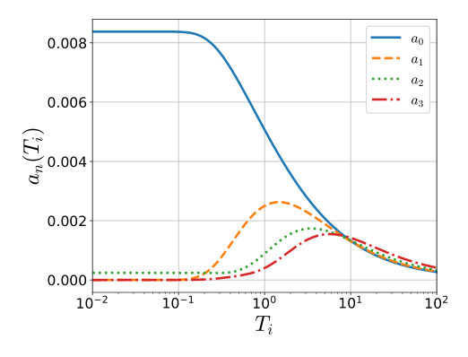
<figcaption class="paper-figure-caption"><b>Fig 2.</b> Figure 2 shows plots of a2(Ti) against Ti for various system size L under the condition Eq. (46). This figure indicates that the peak position around Ti = 3.26 is independent of the system size L. This result supports the theoretical prediction in the previous section and Appendix C.</figcaption>
</figure>
<figure class="paper-figure-card">
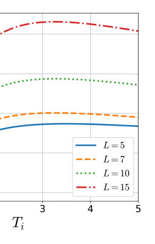
<figcaption class="paper-figure-caption"><b>Fig 3.</b> FIG. 2. Plots of a2(Ti) against Ti for various L when we fix η = 5, and xabs = 4.</figcaption>
</figure>
<figure class="paper-figure-card">
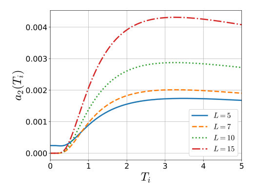
<figcaption class="paper-figure-caption"><b>Fig 4.</b> Figure 3 shows the time evolution of the survival probability S(t, Ti) for various Ti using Eq. (46). This clearly exhibits the crossing of S(t, Ti) during the time evolution. Remarkably, the crossing time is insensitive to Ti, where</figcaption>
</figure>
<figure class="paper-figure-card">

<figcaption class="paper-figure-caption"><b>Fig 5.</b> FIG. 3. Plots of time evolution of S(t, Ti) for various Ti when we fix L = 5, η = 5, and xabs = 4.</figcaption>
</figure>
</div>

<p><strong>Summary.</strong> This work analyzes the quantum tunneling Mpemba effect in an open double-well potential using non-Hermitian quantum mechanics. The authors prove that the characteristic temperature dependence is a universal topological feature governed by spectral properties, crucially demonstrating its invariance with respect to system size L. This offers novel insights for engineering non-equilibrium states via controlled boundary dissipation.</p>
<p><strong>Why it may be interesting.</strong> It provides a rigorous quantum mechanical framework for understanding non-equilibrium relaxation dynamics, bridging classical concepts (like the Mpemba effect) into the realm of open quantum systems and spectral theory.</p>
<details>
<summary>Detailed structure</summary>
<p><strong>Main problem.</strong> The paper investigates the quantum tunneling Mpemba effect, a counterintuitive relaxation phenomenon where an initially hotter system cools faster than a warmer one.</p>
<p><strong>Main result.</strong> The non-monotonic behavior characterizing this effect is proven to be a universal topological property governed by Sturm-Liouville theory and is shown to be independent of the global system size L.</p>
<p><strong>Method.</strong> The analysis employs non-Hermitian spectral decomposition techniques applied to an effective Hamiltonian derived from the Lindblad master equation for open quantum systems.</p>
<p><strong>Model / system.</strong> The model is a single particle in a continuous, symmetric one-dimensional double-well potential, coupled to external environmental sinks at its boundaries (x = ±L).</p>
<p><strong>Key observables.</strong> Non-monotonic behavior of the first non-trivial even-parity spectral coefficient ($a_{2}(T_{i})$), total survival probability trace $ ext{Tr}[
ho(t)]$, and trace distance $\mathcal{D}(t, T_i)$.</p>
<p><strong>Important parameters / regimes.</strong> Initial temperature $T_i$, system size $L$, and the ratio of decay rates ($\Gamma_2 \gg \Gamma_0$ and $\Gamma_2 \gg \Gamma_1$).</p>
<p><strong>Assumptions / limitations.</strong> Observation requires a strict separation of timescales, meaning the over-barrier escape rate must vastly exceed the deep-well tunneling doublet decay rate.</p>
<p><strong>Figures summary.</strong> Not specified by notes; the analysis focuses on mathematical proofs regarding spectral coefficients and size independence.</p>
<p><strong>Paper structure.</strong> The paper moves from defining the open system dynamics via a non-Hermitian Hamiltonian to performing spectral decomposition. It then proves the topological nature of the Mpemba peak using Sturm-Liouville theory, culminating in a proof that this effect is invariant with respect to boundary size L.</p>
</details>
<details>
<summary>Abstract</summary>
<p>The quantum tunneling Mpemba effect is investigated within a continuous one-dimensional symmetric double-well potential open to external environmental sinks at the boundaries ($x=\pm L$). Using a non-Hermitian spectral decomposition of the effective Hamiltonian, we characterize the open-system relaxation dynamics without relying on abstract state-space quenches. We mathematically prove that the non-monotonic behavior of the first non-trivial even-parity spectral coefficient, $a_{2}(T_{i})$, with respect to the initial preparation temperature $T_{i}$ is a universal topological property born from quantum statistical mechanics. Crucially, we demonstrate that this intermediate thermal peak is governed by the Sturm-Liouville oscillation theorem and remains completely invariant with respect to the global system size $L$, contrasting sharply with the boundary-driven classical Mpemba effect. This universal peak arises from the geometric and nodal alignment between highly localized unperturbed states and extended non-Hermitian decay channels. Furthermore, we clarify that while this mechanism is robust, the actual observation of anomalous crossings in the total survival probability trace $S(t,T_{i})$ and the trace distance $\mathcal{D}(t,T_i)$ demand a strict separation of timescales, requiring the over-barrier escape rate to vastly exceed the decay rate of the deep-well tunneling doublet ($Γ_{2}\gg Γ_{0}$ and $Γ_2\gg Γ_1$). Our continuous formulation successfully bridges real-space classical boundary-driven dissipation with open quantum dynamics, providing novel insights for engineering non-equilibrium states via tailored boundary loss.</p>
</details>
<p><sub><a href="#top">↑ back to top</a></sub></p>

<p><a id="paper-2607.04975"></a></p>
<h3 id="optical-switching-of-antiferromagnetic-domains-by-nonreciprocal-heat-current"><a href="http://arxiv.org/abs/2607.04975v1">Optical switching of antiferromagnetic domains by nonreciprocal heat current</a></h3>
<p><strong>Authors:</strong> Takeshi Hayashida, Shunsuke Izumikawa, Kenta Kimura, Carl S. Davies, Andrei Kirilyuk<br>
<strong>Type:</strong> experiment · <strong>Category:</strong> other · <strong>PDF:</strong> <a href="https://arxiv.org/pdf/2607.04975v1">https://arxiv.org/pdf/2607.04975v1</a><br>
<strong>Analysis basis:</strong> full PDF text, analyzed in chunks
<strong>Topic relevance:</strong> <code>exotic spin models in light-matter</code> <strong>3/5</strong> · <code>spintronics-quantum-optics interface</code> <strong>3/5</strong> · <code>driven-dissipative phase transition</code> <strong>2/5</strong> · <code>non-equilibrium dynamics</code> <strong>2/5</strong> · <code>interference shaping light</code> <strong>1/5</strong> · <code>non-equilibrium universality</code> <strong>1/5</strong> · <code>quantum optics experiment</code> <strong>1/5</strong></p>
<div class="figure-strip-hint">↔ Scroll figures horizontally</div>
<div class="paper-figures-scroll">
<figure class="paper-figure-card">
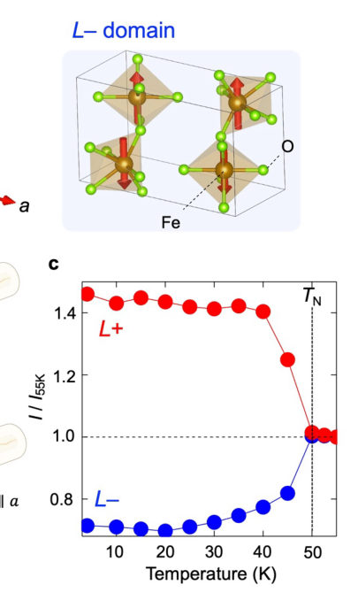
<figcaption class="paper-figure-caption"><b>Fig 1.</b> Fig. 1: Antiferromagnetic domains and nonreciprocal directional dichroism (NDD)</figcaption>
</figure>
<figure class="paper-figure-card">
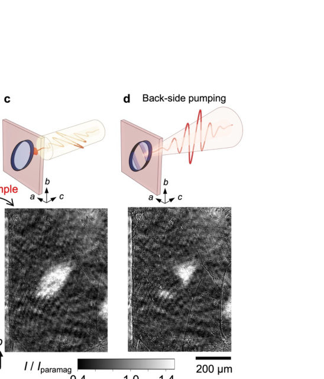
<figcaption class="paper-figure-caption"><b>Fig 2.</b> Fig.2: Propagation-direction-dependent domain switching by mid-IR pulse. Top</figcaption>
</figure>
<figure class="paper-figure-card">
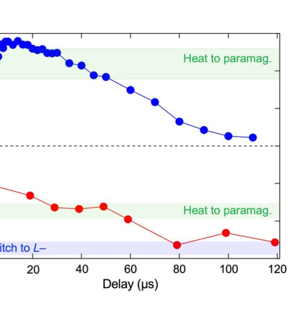
<figcaption class="paper-figure-caption"><b>Fig 3.</b> Fig. 3: Time-resolved evolution of pump-induced transmission changes. a, Initial</figcaption>
</figure>
<figure class="paper-figure-card">

<figcaption class="paper-figure-caption"><b>Fig 4.</b> Fig.4: Spectral dependence of the switching efficiency. a,c, Absorption (red) and</figcaption>
</figure>
</div>

<p><strong>Summary.</strong> The researchers demonstrated the deterministic switching of antiferromagnetic domains in LiFePO4 using mid-infrared light. They established that this nonreciprocal switching mechanism is governed by optically-generated heat currents, proving a general principle for controlling symmetry-broken phases with light. This overcomes limitations found in resonance-based optical control methods.</p>
<p><strong>Why it may be interesting.</strong> This work provides an experimental demonstration of controlling symmetry-broken quantum phases using fundamental directional properties (nonreciprocity) rather than relying on specific material resonances, which is highly relevant for designing general optical control schemes in condensed matter systems.</p>
<details>
<summary>Detailed structure</summary>
<p><strong>Main problem.</strong> To determine if nonreciprocity itself, rather than resonance enhancement, can provide a general principle for deterministically controlling symmetry-broken phases using light.</p>
<p><strong>Main result.</strong> Deterministic, nonreciprocal switching of antiferromagnetic domains is achieved using mid-IR light, mediated by optically-generated heat currents.</p>
<p><strong>Method.</strong> Domain imaging and time-resolved measurements were performed using mid-infrared pulses from a Free-Electron Laser facility (FELIX).</p>
<p><strong>Model / system.</strong> The study uses the magnetoelectric antiferromagnet LiFePO4, which inherently breaks both space-inversion and time-reversal symmetries. The control mechanism is attributed to nonreciprocal heat currents generated by directional light propagation.</p>
<p><strong>Key observables.</strong> Domain states (L+ and L-), direction-dependent switching efficiency, transient changes in transmitted light intensity, and the magnitude of the optically-generated heat current.</p>
<p><strong>Important parameters / regimes.</strong> Mid-infrared wavelength range ($7–19\ \mu	ext{m}$), low temperature ($4\ 	ext{K}$), and the comparison between front-side vs. back-side pumping directions.</p>
<p><strong>Assumptions / limitations.</strong> The switching mechanism is primarily governed by nonreciprocal heat currents, overcoming spectral constraints associated with resonance-based schemes. The conclusion regarding NDD absence is limited by experimental sensitivity.</p>
<p><strong>Figures summary.</strong> Figures demonstrate domain structure via NDD imaging and show that front-side pumping induces L+ to L- switching while back-side pumping reverses this. Time-resolved data track the transient changes associated with heating and switching.</p>
<p><strong>Paper structure.</strong> The paper establishes the physical basis (symmetry breaking in AFMs), demonstrates nonreciprocal domain switching using mid-IR light, attributes the mechanism to directional heat currents, and rules out simple resonant dichroism as the sole cause.</p>
</details>
<details>
<summary>Abstract</summary>
<p>What distinguishes front from back? In physics, such directionality emerges only when an underlying symmetry is broken. Antiferromagnets that inherently break both space-inversion and time-reversal symmetries provide a striking example, exhibiting nonreciprocal optical responses that depend on the direction of light propagation. Beyond distinguishing antiferromagnetic domains, we show that this nonreciprocity can deterministically create them. Using mid-infrared light, we demonstrate deterministic switching of antiferromagnetic domains in the magnetoelectric antiferromagnet LiFePO4, where illumination from opposite sides selectively stabilizes opposite domain states. Remarkably, the switching persists over a broad wavelength range rather than being confined to a narrow transition-specific spectral region, overcoming the spectral and material constraints of resonance-based optical switching schemes. The broadband switching originates from the material's intrinsic nonreciprocity through optically generated heat currents. Our results establish nonreciprocity as a general principle for deterministically controlling symmetry-broken phases with light.</p>
</details>
<p><sub><a href="#top">↑ back to top</a></sub></p>

<p><a id="paper-2607.04672"></a></p>
<h3 id="a-path-superposition-framework-for-quantum-gate-teleportation"><a href="http://arxiv.org/abs/2607.04672v1">A Path-Superposition Framework for Quantum Gate Teleportation</a></h3>
<p><strong>Authors:</strong> Santiago Ávila, Marco Enríquez<br>
<strong>Type:</strong> both · <strong>Category:</strong> quantum information and computing · <strong>PDF:</strong> <a href="https://arxiv.org/pdf/2607.04672v1">https://arxiv.org/pdf/2607.04672v1</a><br>
<strong>Analysis basis:</strong> full PDF text, analyzed in chunks
<strong>Topic relevance:</strong> <code>interference shaping light</code> <strong>3/5</strong> · <code>quantum optics experiment</code> <strong>3/5</strong> · <code>QC/QI experiment</code> <strong>2/5</strong> · <code>quantum measurements</code> <strong>2/5</strong> · <code>entanglement &amp; information structure</code> <strong>1/5</strong> · <code>measurement-induced transitions</code> <strong>1/5</strong></p>
<div class="figure-strip-hint">↔ Scroll figures horizontally</div>
<div class="paper-figures-scroll">
<figure class="paper-figure-card">

<figcaption class="paper-figure-caption"><b>Fig 1.</b> FIG. 1. Schematic diagram depicting distribution of qubits and the corresponding coherently controlled operations be- tween Alice and Bob. Both parties possess one local qubit, |ψA⟩and |ψB⟩(blue and orange), and one entangled resource |ψab⟩. The measurement of this control resource mediates the superposition of paths, causing |ψA⟩(|ψB⟩) to undergo the transformation VA1 (VB1) or VA2 (VB2).</figcaption>
</figure>
<figure class="paper-figure-card">

<figcaption class="paper-figure-caption"><b>Fig 2.</b> FIG. 2. Schematic representation of the full teleportation protocol. Coherent control is illustrated by showing the two possible orderings that |ψA⟩and (|ψB⟩) undergo, mediated by the entangled control pair (gray wires). This generates a superposition of paths, depicted by the dashed blue and orange wires. A Hadamard gate is then applied to each control qubit, transforming the initial control superposition of |00⟩and |11⟩to |00⟩, |11⟩, |10⟩, and |01⟩, represented by the gray wires mediating the superpositions in the control-state. A measurement of the control qubit collapses the system onto one of the two Alice and Bob subsystems, allowing them to perform the appropriate correction. The...</figcaption>
</figure>
<figure class="paper-figure-card">

<figcaption class="paper-figure-caption"><b>Fig 3.</b> FIG. 3. Proof-of-concept photonic realization of the proposed framework. A BBO-based SPDC source generates a polarization- entangled photon pair [30], PBSs map polarization into spatial path modes, and 45◦HWPs transfer the entanglement to the path DOF [4]. A HWP at angle (θ) then prepares each polarization qubit in an arbitrary linear-polarization state. Additional HWP and QWP sequences implement path-dependent polarization operations that can perform any SU(2) unitary transformation [31], therefore able to apply the V set gates. Recombination of the two spatial paths using a 50/50 beam splitter results in Hadamard like operations [26], replicating equation (6). The resulting coincidence...</figcaption>
</figure>
</div>

<p><strong>Summary.</strong> This paper introduces a general framework utilizing 'path superposition' to achieve deterministic quantum gate teleportation. It establishes design conditions and demonstrates protocols for CNOT and CZ gates, showing that the underlying architecture can be reused for various nonlocal operations. The work culminates in outlining a proof-of-concept photonic realization using spatial paths and polarization.</p>
<p><strong>Why it may be interesting.</strong> The use of path superposition as a resource offers an alternative physical mechanism to implement non-local quantum operations compared to standard entanglement swapping or local entangling gate sequences.</p>
<details>
<summary>Detailed structure</summary>
<p><strong>Main problem.</strong> The goal is to develop a general, systematic framework for performing quantum gate teleportation that implements nonlocal operations without physically moving the qubits.</p>
<p><strong>Main result.</strong> The authors establish general design conditions based on path superposition, successfully constructing protocols for implementing CNOT and CZ gates using this architecture.</p>
<p><strong>Method.</strong> The method involves defining local unitary operators conditioned on measurement outcomes derived from a pre-shared entangled resource whose phase dictates the target gate. The framework requires satisfying specific mathematical design conditions to ensure determinism.</p>
<p><strong>Model / system.</strong> The model uses 'path superposition' as the key resource, which is physically realized in a proof-of-concept photonic setup using spatial paths and polarization degrees of freedom for encoding qubits and entanglement control.</p>
<p><strong>Key observables.</strong> Measurement branch probabilities ($p_{\pm\pm}, p_{\pm\mp}$), the expectation value $z$, and the relative phase $\eta$ of the entangled resource are key observables used to verify determinism.</p>
<p><strong>Important parameters / regimes.</strong> The relative phase $\eta$ in the entangled resource is crucial, as different values yield different nonlocal operations (e.g., $\eta = \pi/2$ for CNOT).</p>
<p><strong>Assumptions / limitations.</strong> The framework assumes that satisfying the derived design conditions is sufficient to guarantee deterministic teleportation up to an overall global phase.</p>
<p><strong>Figures summary.</strong> Figure 1 schematically shows the qubit distribution and controlled operations. Figure 2 illustrates the full protocol using path superposition, showing Hadamard gates and correction paths. Figure 3 details the photonic realization, mapping polarization to path DOF for implementation.</p>
<p><strong>Paper structure.</strong> The paper first introduces the general framework and design conditions (Chunk 1). It then rigorously derives these conditions by analyzing state evolution and probabilities (Chunk 2). Finally, it presents a detailed proof-of-concept using photonics, demonstrating the modularity of the architecture for different gates (Chunks 3 &amp; 4).</p>
</details>
<details>
<summary>Abstract</summary>
<p>Quantum gate teleportation enables distant parties to implement nonlocal quantum operations without physically transferring the participating qubits, making it a promising primitive for distributed quantum computing. We introduce a general framework for deterministic quantum gate teleportation based on path superposition, in which the target nonlocal operation is specified through the phase of a preshared maximally entangled resource and a suitable family of path-dependent local unitary operators. The framework establishes general design conditions that guarantee deterministic teleportation after measurement of the control qubits and the application of local correction operations. As representative realizations, we construct teleportation protocols for controlled-NOT (CNOT) and controlled-Z (CZ) gates, demonstrating that different nonlocal operations can be implemented within the same protocol architecture through appropriate choices of the design parameters. We further outline a proof-of-concept photonic realization based on spatial-path and polarization degrees of freedom. The proposed framework identifies path superposition as a versatile resource for quantum gate teleportation and distributed quantum information processing.</p>
</details>
<p><sub><a href="#top">↑ back to top</a></sub></p>

<p><a id="paper-2607.05269"></a></p>
<h3 id="excitation-spectra-and-rank-tomography-of-linear-matrix-product-tangent-spaces"><a href="http://arxiv.org/abs/2607.05269v1">Excitation spectra and rank tomography of linear matrix product tangent spaces</a></h3>
<p><strong>Authors:</strong> Otto T. P. Schmidt, Iacopo Carusotto<br>
<strong>Type:</strong> theory · <strong>Category:</strong> numerical methods · <strong>PDF:</strong> <a href="https://arxiv.org/pdf/2607.05269v1">https://arxiv.org/pdf/2607.05269v1</a><br>
<strong>Analysis basis:</strong> full PDF text, analyzed in chunks
<strong>Topic relevance:</strong> <code>analog quantum simulation</code> <strong>3/5</strong> · <code>methods for driven-dissipative</code> <strong>3/5</strong> · <code>entanglement &amp; information structure</code> <strong>2/5</strong> · <code>Keldysh / 2PI / non-Gaussian methods</code> <strong>1/5</strong> · <code>correlated / nonlocal dissipation</code> <strong>1/5</strong> · <code>driven-dissipative phase transition</code> <strong>1/5</strong> · <code>non-equilibrium dynamics</code> <strong>1/5</strong></p>
<div class="figure-strip-hint">↔ Scroll figures horizontally</div>
<div class="paper-figures-scroll">
<figure class="paper-figure-card">

<figcaption class="paper-figure-caption"><b>Fig 1.</b> FIG. 1. A MPS representation in left-canonical gauge of an order-five projective tensor [T].</figcaption>
</figure>
<figure class="paper-figure-card">

<figcaption class="paper-figure-caption"><b>Fig 2.</b> FIG. 3. Exact excitation energies (coloured dots) and tangent-space reconstructions (coloured crosses) for an N = 10 Bose–Hubbard chain with bond dimension D = 8, local dimension d = 3, and chemical potential µ/U = 0.5. Results are shown for the particle-number conserving Hamiltonian with U(1)-breaking term η = 0 (top) and for the symmetry- breaking Hamiltonian with η = 0.01 (bottom). For η = 0, colours identify the particle-number sectors M. For η ̸= 0, particle number is not conserved and the continuous colour scale indicates the expectation value ⟨ˆ M⟩of each state. The ground-state energies and off-diagonal coherence for η = 0 as- sociated with the M = 10 and M = 11 sectors are also...</figcaption>
</figure>
<figure class="paper-figure-card">

<figcaption class="paper-figure-caption"><b>Fig 3.</b> FIG. 4. Approximation error |ω −ωexact| for the lowest exci- tation modes of the BH model in number sectors M = M0 ±1 for N = 10, µ = 0.5, d = 3 and different bond dimensions D. The shaded regions indicate different rank profiles rℓ(m); see Section V B.</figcaption>
</figure>
<figure class="paper-figure-card">

<figcaption class="paper-figure-caption"><b>Fig 4.</b> FIG. 5. Exact spectrum (blue dots) and the reconstructed spectrum (blue crosses) for N = 4, D = 5, µ = 0.5. Excita- tions in number sectors 3, 4 and 5 are shown in top, middle and bottom, respectively. The shaded regions indicate differ- ent rank profiles of rl(m).</figcaption>
</figure>
<figure class="paper-figure-card">
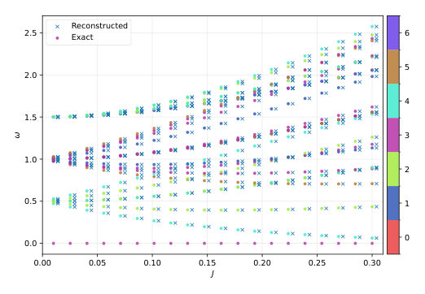
<figcaption class="paper-figure-caption"><b>Fig 5.</b> FIG. 6. Exact spectrum (coloured dots) and the reconstructed spectrum (blue crosses) for N = 3, D = 3, µ = 0.5. The colour scale indicates the particle-number sectors of the exci- tations.</figcaption>
</figure>
</div>

<p><strong>Summary.</strong> The paper introduces a sophisticated tangent-space method for analyzing excitation spectra in quantum many-body systems modeled by MPS. It enhances standard tensor network techniques by introducing 'rank tomography' to characterize state expressivity using particle-resolved rank profiles. This framework successfully applies to the Bose-Hubbard model, offering accurate spectral predictions while providing deep geometric insights into the underlying mathematical structure of the physical states.</p>
<p><strong>Why it may be interesting.</strong> This work provides a powerful, mathematically rigorous extension of standard tensor network techniques (like DMRG/tDMRG) by incorporating differential geometric constraints to improve spectral accuracy and provide deeper insights into the underlying structure of quantum states.</p>
<details>
<summary>Detailed structure</summary>
<p><strong>Main problem.</strong> To develop a rigorous mathematical framework using tangent spaces to accurately calculate excitation spectra for quantum many-body systems described by Matrix Product States (MPS).</p>
<p><strong>Main result.</strong> The method successfully reproduces low-lying excitations and captures finite-size precursors of the Mott-insulator to superfluid transition in the Bose-Hubbard model.</p>
<p><strong>Method.</strong> It employs a tangent-space approach on the algebraic variety defined by MPS, incorporating 'rank tomography' (PRSR) to characterize expressivity beyond simple bond dimensions. The dynamics are projected onto this variational tangent space using principles derived from time-dependent variational calculations.</p>
<p><strong>Model / system.</strong> The primary benchmark is the Bose-Hubbard model on an open chain of sites, analyzed within the MPS framework. The mathematical structure involves studying the geometry (smoothness) of the rank constraints defining the MPS variety.</p>
<p><strong>Key observables.</strong> Excitation spectra ($\omega$), Particle-resolved Schmidt-rank distribution (PRSR), and the comparison between reconstructed vs. exact low-energy spectra.</p>
<p><strong>Important parameters / regimes.</strong> Bond dimensions ($D$), coupling constants ($J$), interaction strength ($U$), chemical potential ($\mu$), and local Hilbert space dimension ($d$).</p>
<p><strong>Assumptions / limitations.</strong> The method provides a first-order approximation to excitations, and its applicability relies on the MPS representation being efficient for the Hamiltonian.</p>
<p><strong>Figures summary.</strong> Figures illustrate the MPS structure in gauge-fixed forms, compare exact vs. reconstructed low-energy spectra for the Bose-Hubbard model, and show the mathematical projection onto the tangent space.</p>
<p><strong>Paper structure.</strong> The paper moves from defining the general tangent-space method on MPS varieties to applying it to the Bose-Hubbard model dynamics (TDVP). It also delves into the structural analysis of these varieties using rank tomography (PRSR) and algebraic geometry proofs regarding smoothness.</p>
</details>
<details>
<summary>Abstract</summary>
<p>We formulate a tangent-space method for algebraic varieties of matrix product states (MPS) to study excitation spectra of non-uniform quantum many-body systems with open boundary conditions. We further introduce a rank tomography of the MPS tangent space, which characterizes its expressivity in terms of particle-sector rank profiles of the underlying MPS variety. Using the Bose--Hubbard model as a benchmark, we illustrate that the method reproduces low-lying excitations and captures finite-size precursors of the Mott-insulator to superfluid transition.</p>
</details>
<p><sub><a href="#top">↑ back to top</a></sub></p>

<p><a id="paper-2607.04320"></a></p>
<h3 id="fundamental-limits-on-state-preparation-for-an-open-qubit"><a href="http://arxiv.org/abs/2607.04320v1">Fundamental limits on state preparation for an open qubit</a></h3>
<p><strong>Authors:</strong> D. A. Abraamian, L. V. Lokutsievskiy, A. N. Pechen<br>
<strong>Type:</strong> theory · <strong>Category:</strong> other · <strong>PDF:</strong> <a href="https://arxiv.org/pdf/2607.04320v1">https://arxiv.org/pdf/2607.04320v1</a><br>
<strong>Analysis basis:</strong> full PDF text, analyzed in chunks
<strong>Topic relevance:</strong> <code>methods for driven-dissipative</code> <strong>3/5</strong> · <code>driven-dissipative phase transition</code> <strong>2/5</strong> · <code>non-equilibrium dynamics</code> <strong>2/5</strong> · <code>Keldysh / 2PI / non-Gaussian methods</code> <strong>1/5</strong> · <code>analog quantum simulation</code> <strong>1/5</strong> · <code>correlated / nonlocal dissipation</code> <strong>1/5</strong> · <code>non-equilibrium universality</code> <strong>1/5</strong> · <code>quantum measurements</code> <strong>1/5</strong></p>
<div class="figure-strip-hint">↔ Scroll figures horizontally</div>
<div class="paper-figures-scroll">
<figure class="paper-figure-card">
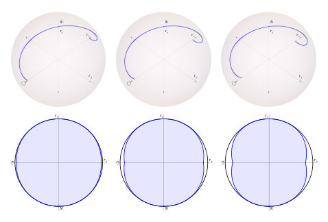
<figcaption class="paper-figure-caption"><b>Fig 1.</b> FIG. 1. The first row shows the curve Γ ⊂∂R in the Bloch ball for α = γ/ω = 0.1, 0.3, 0.5 from left to right. The second row shows the intersection of the boundary ∂R with rxrz- plane for the same values of α.</figcaption>
</figure>
<figure class="paper-figure-card">
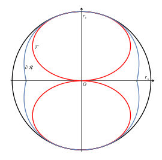
<figcaption class="paper-figure-caption"><b>Fig 2.</b> FIG. 2. Structure of the intersections of ∂R and T with the rxrz-plane {ry = 0} in the Bloch ball B.</figcaption>
</figure>
<figure class="paper-figure-card">

<figcaption class="paper-figure-caption"><b>Fig 3.</b> FIG. 3. Curve Γ ⊂∂R in the Bloch ball for γ/ω = 0.1, 0.3, 0.5 from left to right. The boundary ∂R is a surface of revolution obtained by rotating Γ about the rx-axis. The curve Γ is symmetric wrt reflection (rx, ry, rz) 7→(−rx, −ry, rz)</figcaption>
</figure>
<figure class="paper-figure-card">
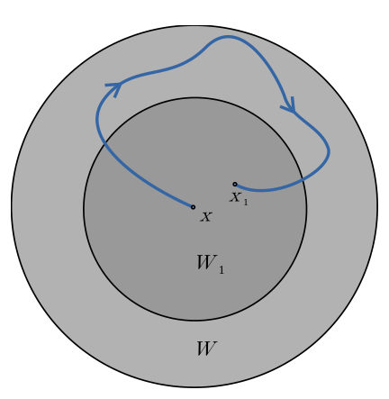
<figcaption class="paper-figure-caption"><b>Fig 4.</b> FIG. 4. STL-local controllability</figcaption>
</figure>
<figure class="paper-figure-card">

<figcaption class="paper-figure-caption"><b>Fig 5.</b> FIG. 5. figure-eight curve E(φ) for α = 0.1</figcaption>
</figure>
</div>

<p><strong>Summary.</strong> This paper analytically determines the precise boundaries governing what states can be prepared in an open qubit under coherent driving. It proves that this boundary forms a specific surface of revolution within the Bloch ball, detailing the geometric constraints imposed by dissipation. The results yield fundamental bounds on quantum control fidelity for such systems.</p>
<p><strong>Why it may be interesting.</strong> This work provides a complete geometric characterization of controllability for an open quantum system, which is fundamental knowledge for designing robust quantum control protocols in physical implementations like superconducting qubits or cavity QED systems.</p>
<details>
<summary>Detailed structure</summary>
<p><strong>Main problem.</strong> The paper determines the ultimate geometric limits of state preparation (the reachable set) for an open qubit subjected to coherent external driving.</p>
<p><strong>Main result.</strong> The boundary of the reachable set is proven to be a surface of revolution around the $r_x$-axis, which is analytic except for two conical singularities. A closed-form control protocol is derived to approach any state on this boundary asymptotically.</p>
<p><strong>Method.</strong> The analysis employs geometric control theory applied to the Bloch sphere representation of the qubit density matrix dynamics governed by a GKSL master equation.</p>
<p><strong>Model / system.</strong> The system is an open two-level quantum system (qubit) whose evolution is described by the GKSL master equation, incorporating free Hamiltonian ($\sigma_z$), interaction ($u\sigma_x$), and dissipation terms. The state space is analyzed in Bloch ball coordinates $(r_x, r_y, r_z)$.</p>
<p><strong>Key observables.</strong> The reachable set $\mathcal{R}$ (or $ar{R}$) within the Bloch ball; boundary points ($\partial\mathcal{R}$).</p>
<p><strong>Important parameters / regimes.</strong> Dissipation rates ($\gamma$), coupling strengths ($\kappa$), and control field amplitudes ($u(t)$).</p>
<p><strong>Assumptions / limitations.</strong> The analysis focuses on asymptotic reachability, meaning boundary states are only approached in the limit of infinite time.</p>
<p><strong>Figures summary.</strong> Figures illustrate the structure of the boundary $\partial\mathcal{R}$ as a surface of revolution around $r_x$, showing intersections with preparatory surfaces like the torus-like region $T$.</p>
<p><strong>Paper structure.</strong> The paper progresses by setting up the dynamics in Bloch coordinates, establishing that the reachable set is solid of revolution (Theorem 2), and then rigorously characterizing the boundary $\partial\mathcal{R}$ using separatrices and analytic curve descriptions (Theorem 3).</p>
</details>
<details>
<summary>Abstract</summary>
<p>We analytically determine the ultimate limits of state preparation in two-level open quantum systems driven by coherent control. For a dissipative qubit governed by a GKSL master equation, we give an exact characterization of the reachable set in the Bloch ball. Dissipation excludes a region of states in the Bloch ball which cannot be approached even under arbitrarily strong coherent driving, and we prove that this region has a nontrivial geometry whose boundary is a surface of revolution around the $x$-axis which is analytic except for two conical singularities. We derive a closed-form control protocol for moving on this boundary, and construct an explicit protocol that steers the system arbitrarily close to any prescribed boundary state. These results provide a complete geometric constructive description of reachable qubit states in the standard dissipative environment, establishing fundamental bounds on controllability and state-preparation fidelity for open two-level quantum systems.</p>
</details>
<p><sub><a href="#top">↑ back to top</a></sub></p>

<p><a id="paper-2607.03737"></a></p>
<h3 id="intermittency-signatures-in-the-deformation-of-a-passive-droplet-in-active-turbulence"><a href="http://arxiv.org/abs/2607.03737v1">Intermittency Signatures in the Deformation of a Passive Droplet in Active Turbulence</a></h3>
<p><strong>Authors:</strong> Sudeep Halder, Abhishek Chaudhuri<br>
<strong>Type:</strong> theory · <strong>Category:</strong> statistical mechanics · <strong>PDF:</strong> <a href="https://arxiv.org/pdf/2607.03737v1">https://arxiv.org/pdf/2607.03737v1</a><br>
<strong>Analysis basis:</strong> full PDF text, analyzed in chunks
<strong>Topic relevance:</strong> <code>non-equilibrium dynamics</code> <strong>3/5</strong> · <code>non-equilibrium universality</code> <strong>3/5</strong> · <code>driven-dissipative phase transition</code> <strong>2/5</strong> · <code>Frenkel-Kontorova</code> <strong>1/5</strong> · <code>Keldysh / 2PI / non-Gaussian methods</code> <strong>1/5</strong> · <code>correlated / nonlocal dissipation</code> <strong>1/5</strong> · <code>methods for driven-dissipative</code> <strong>1/5</strong></p>
<div class="figure-strip-hint">↔ Scroll figures horizontally</div>
<div class="paper-figures-scroll">
<figure class="paper-figure-card">

<figcaption class="paper-figure-caption"><b>Fig 1.</b> FIG. 1. Intermittent deformation of a passive droplet. (a) Snapshot of the deformable droplet</figcaption>
</figure>
<figure class="paper-figure-card">
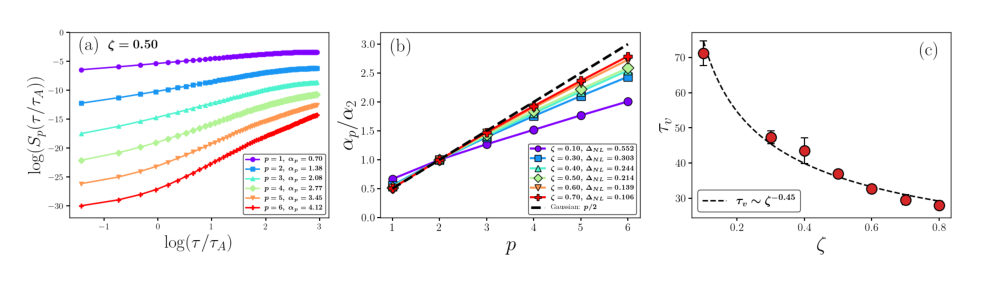
<figcaption class="paper-figure-caption"><b>Fig 2.</b> FIG. 2. (Color online) Structure functions and multiscaling of droplet-shape increments. (a) Log–</figcaption>
</figure>
<figure class="paper-figure-card">
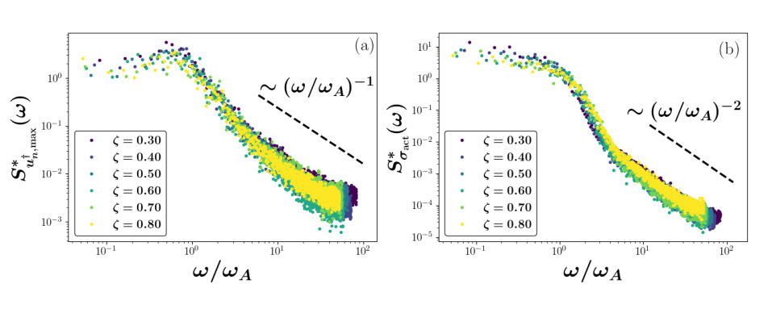
<figcaption class="paper-figure-caption"><b>Fig 3.</b> FIG. 3. (Color online) Normalized power spectral densities versus the activity-scaled frequency</figcaption>
</figure>
</div>

<p><strong>Summary.</strong> This work simulates a passive droplet deforming within an active nematic fluid to study the nature of fluctuations generated by active turbulence. The key finding is that the deformation exhibits strong temporal intermittency, suggesting that interfacial restoring forces filter the intense active forcing into bursty dynamics. This provides quantitative evidence for how soft inclusions reveal the underlying statistical character of complex non-equilibrium baths.</p>
<p><strong>Why it may be interesting.</strong> While focused on soft matter hydrodynamics, the rigorous analysis of non-Gaussian statistics, heavy tails, and multiscaling structures (intermittency) provides a general framework for studying energy dissipation and fluctuation dynamics in complex, driven systems, which has parallels to non-equilibrium quantum field theories.</p>
<details>
<summary>Detailed structure</summary>
<p><strong>Main problem.</strong> To investigate whether fluctuations generated by active turbulence are effectively Gaussian or exhibit intermittency using a deformable passive inclusion.</p>
<p><strong>Main result.</strong> The droplet deformation exhibits strong temporal intermittency, with normalized intermittency being strongest at lower activity levels. The analysis reveals a hierarchy of intermittency where the shape is more weakly intermittent than translation or active-stress fluctuations.</p>
<p><strong>Method.</strong> Fully resolved nematohydrodynamic simulations are used to track the time evolution and statistical properties (PDFs, structure functions) of the passive droplet's aspect ratio as it deforms in an active nematic bath.</p>
<p><strong>Model / system.</strong> The system models a two-dimensional incompressible active nematic fluid containing a passive nematic droplet. The dynamics are governed by nematohydrodynamics incorporating active stresses ($\sigma_A$) derived from the Q-tensor, and the droplet's response is mediated by interfacial restoring forces.</p>
<p><strong>Key observables.</strong> Droplet aspect ratio increments ($\Delta AR$), Probability Density Functions (PDFs) of these increments, structure functions ($S_p(	au)$), waiting times ($W$), burst sizes ($S$), and spectral densities for interface velocity vs. active stress.</p>
<p><strong>Important parameters / regimes.</strong> Activity strength ($\zeta$), time lag ($    au$), and the comparison between different orders of statistical moments ($p$).</p>
<p><strong>Assumptions / limitations.</strong> The analysis assumes the droplet possesses internal shape modes and interfacial restoring forces that allow it to filter the external active forcing over time. The simulations are limited to two dimensions (2D).</p>
<p><strong>Figures summary.</strong> Figures show PDFs for $\Delta AR$ at various activities, CCDFs for waiting times and burst sizes exhibiting power-law tails, structure functions $S_p(	au)$ vs $  au$, and normalized Power Spectral Densities comparing interface velocity ($\omega^{-1}$) to active stress ($\omega^{-2}$).</p>
<p><strong>Paper structure.</strong> The paper develops by first simulating the coupled nematohydrodynamics. It then analyzes statistical measures like PDFs and structure functions to quantify intermittency in the droplet's deformation. Finally, it compares spectral signatures between the interface velocity and the driving active stress.</p>
</details>
<details>
<summary>Abstract</summary>
<p>We use fully resolved nematohydrodynamic simulations to study deformation statistics of a passive nematic droplet in two-dimensional extensile active-nematic turbulence. We find that the droplet aspect ratio serves as a scalar probe of the active bath. Its increments show heavy-tailed distributions with dependence on the time lag, scale-free burst statistics and multiscaling structure functions which establish temporal intermittency. While the mean deformation increases with activity, normalized intermittency is strongest at lower activity. This suggests slower and more coherent bath forcing. When compared with translational and forcing-side fluctuations, it reveals a hierarchy of intermittency: shape is more weakly intermittent than translation and active-stress fluctuations, consistent with filtering by interfacial restoring forces. Power spectra show an extended near-$1/ω$ regime for the maximal normal interface velocity, distinct from the steeper, approximately $1/ω^{2}$ spectrum of the interfacial active stress. Soft inclusions thus reveal how interfacial restoring forces convert active forcing into bursty, scale-rich deformation dynamics.</p>
</details>
<p><sub><a href="#top">↑ back to top</a></sub></p>

<p><a id="paper-2607.05281"></a></p>
<h3 id="routing-anonymity-and-identifiability-of-noisy-quantum-hardware"><a href="http://arxiv.org/abs/2607.05281v1">Routing Anonymity and Identifiability of Noisy Quantum Hardware</a></h3>
<p><strong>Authors:</strong> Ben Priestley, Mina Doosti<br>
<strong>Type:</strong> both · <strong>Category:</strong> quantum information and computing · <strong>PDF:</strong> <a href="https://arxiv.org/pdf/2607.05281v1">https://arxiv.org/pdf/2607.05281v1</a><br>
<strong>Analysis basis:</strong> full PDF text, analyzed in chunks
<strong>Topic relevance:</strong> <code>quantum measurements</code> <strong>3/5</strong> · <code>QC/QI experiment</code> <strong>2/5</strong> · <code>measurement-induced transitions</code> <strong>2/5</strong> · <code>Keldysh / 2PI / non-Gaussian methods</code> <strong>1/5</strong> · <code>correlated / nonlocal dissipation</code> <strong>1/5</strong> · <code>driven-dissipative phase transition</code> <strong>1/5</strong> · <code>entanglement &amp; information structure</code> <strong>1/5</strong> · <code>methods for driven-dissipative</code> <strong>1/5</strong></p>
<div class="figure-strip-hint">↔ Scroll figures horizontally</div>
<div class="paper-figures-scroll">
<figure class="paper-figure-card">

<figcaption class="paper-figure-caption"><b>Fig 1.</b> Figure 1: Illustration of the lower and upper bounds on expected distinguishing bias by circuit depth, as given by Theorem 5 and Theorem 6. The shaded region between the curves covers the perturbative range 0 ≤d ≤d0 of depths satisfying Theorem 6’s additional assumptions.</figcaption>
</figure>
<figure class="paper-figure-card">

<figcaption class="paper-figure-caption"><b>Fig 2.</b> Figure 2: t-SNE dimensionality reduction plot visualising the 16-dimensional features extracted from the penultimate layer of the classifier, given raw depth-10 data. We plot the entire dataset, across all train-val-test splits to indicate the generality with which latent representations have been learned.</figcaption>
</figure>
<figure class="paper-figure-card">
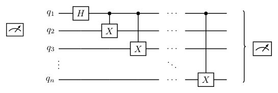
<figcaption class="paper-figure-caption"><b>Fig 3.</b> Figure 3: Probe circuit structures used in our cloud experiments. We have: (a) brickwork circuit architecture, wherein each layer Li comprises (roughly) n/2 two-qubit unitaries, which offset-interlock with those in layers Li−1 and Li+1, randomly sampled from the unitary Haar measure, and we call such a circuit “depth d” if it has d layers L1, . . . , Ld; and (b) GHZ circuit which prepares the state |GHZn⟩= 1 √</figcaption>
</figure>
<figure class="paper-figure-card">

<figcaption class="paper-figure-caption"><b>Fig 4.</b> Figure 4: Example dimensionality reduction plots of quantum device feature vectors, hue by device. All features are shown via out repository, for both t-SNE and PCA reductions. In our PCA plots, the variance explained by the first two principal components (plotted) is given in parentheses.</figcaption>
</figure>
<figure class="paper-figure-card">

<figcaption class="paper-figure-caption"><b>Fig 5.</b> Fig. 4a demonstrates higher-dimensional clustering via t-SNE for the shallowest of the Haar-random circuit experiments, for a select few example features. It is immediately evident that like-type data points occupy similar neighbourhoods over many features, whereas differing-type data points indicate that at least a partial separation can be observed. Similarly, see Fig. 4b and Fig. 5.</figcaption>
</figure>
</div>

<p><strong>Summary.</strong> This paper establishes 'routing anonymity' as a necessary security requirement for quantum cloud computing by analyzing how backend-specific noise fingerprints leak from noisy measurements. It develops a formal framework proving that this identifiability decays exponentially and quantifies the fundamental trade-off between hiding hardware details and maintaining data utility.</p>
<p><strong>Why it may be interesting.</strong> It provides rigorous security metrics for practical quantum cloud usage, quantifying how much information about the underlying physical hardware can leak through measurement outcomes, which is vital for building trustworthy quantum infrastructure.</p>
<details>
<summary>Detailed structure</summary>
<p><strong>Main problem.</strong> The work develops a formal framework for backend identifiability and introduces 'routing anonymity' as a crucial security notion for quantum cloud services.</p>
<p><strong>Main result.</strong> Backend identifiability is shown to be equivalent to a hypothesis-testing problem, establishing an exponential decay rate for anonymity under passive access and defining a fundamental utility-anonymity trade-off.</p>
<p><strong>Method.</strong> The authors introduce an operational backend-identifiability game and use tools from information theory (Chernoff rate) and quantum process analysis (Pauli-transfer-matrix tools).</p>
<p><strong>Model / system.</strong> The study models cloud-based quantum computing where users submit circuits to proprietary, noisy hardware backends accessed via a service provider.</p>
<p><strong>Key observables.</strong> Backend-specific 'fingerprints' imprinted in the classical output distribution from finite-shot measurements; classification accuracy between different physical platforms (e.g., ion-trap vs. superconducting).</p>
<p><strong>Important parameters / regimes.</strong> The depth of the quantum circuit, the number of shots used for measurement, and the rate of information leakage.</p>
<p><strong>Assumptions / limitations.</strong> The analysis focuses on provider-side privacy (routing anonymity) rather than just user input/output protection; results are tested against passive i.i.d. access models.</p>
<p><strong>Figures summary.</strong> Figures illustrate high classification accuracies when distinguishing between different quantum backends and show the temporal structure of noise signals, supporting the intermediate-depth principle.</p>
<p><strong>Paper structure.</strong> The paper first develops the theoretical framework for routing anonymity as a security notion, proves its mathematical properties (e.g., Chernoff decay), establishes the utility-anonymity trade-off, and complements this theory with extensive experiments on real quantum hardware platforms.</p>
</details>
<details>
<summary>Abstract</summary>
<p>Present-day quantum computing is cloud-based, where a user submits a circuit to a service provider's proprietary backend hardware. While providers may wish to hide implementation details, scheduling choices, or even which physical device was used, noisy finite-shot outputs can carry backend-specific fingerprints: information imprinted in the classical output distribution that can reveal the backend identity. So far, such fingerprints have mostly been studied from a benchmarking perspective, with limited attention to privacy considerations for users and providers. This work develops the first formal framework for backend identifiability and its privacy implications. We introduce a backend-identifiability game and use it to formalise routing anonymity as a security notion for quantum cloud services. We show that backend identifiability is a hypothesis-testing problem and prove that, under passive i.i.d. access to a single backend, routing anonymity decays exponentially at the Chernoff rate. We also establish a utility-anonymity trade-off, imposing fundamental limits on how much backend-specific information can be removed from classical outputs without degrading their usefulness. In addition, we observe that, for noisy quantum hardware, identifying fingerprints are inherently an intermediate-depth phenomenon, and establish a depth principle using Pauli-transfer-matrix tools. We complement the theory with experiments on Amazon Braket on AWS, using ion-trap and superconducting quantum processors. We observe 87-90% classification between superconducting backends and 96-100% classification across physical platforms, and find that identifiability can survive natural forms of post-processing. Overall, these results establish routing anonymity as a distinct security requirement for quantum cloud computing, and provide a framework for quantifying and controlling the utility-anonymity trade-off.</p>
</details>
<p><sub><a href="#top">↑ back to top</a></sub></p>

<p><a id="paper-2607.04052"></a></p>
<h3 id="a-lie-jordan-geometric-formulation-of-lindblad-dynamics"><a href="http://arxiv.org/abs/2607.04052v1">A Lie-Jordan Geometric Formulation of Lindblad Dynamics</a></h3>
<p><strong>Authors:</strong> Leonel Bixano, Victor Alberto Cruz-Barriguete, Guillermo López-Alvarez, V. G. Ibarra-Sierra, José Luis Cardoso, Alejandro Kunold<br>
<strong>Type:</strong> theory · <strong>Category:</strong> other · <strong>PDF:</strong> <a href="https://arxiv.org/pdf/2607.04052v1">https://arxiv.org/pdf/2607.04052v1</a><br>
<strong>Analysis basis:</strong> full PDF text, analyzed in chunks
<strong>Topic relevance:</strong> <code>correlated / nonlocal dissipation</code> <strong>3/5</strong> · <code>methods for driven-dissipative</code> <strong>3/5</strong> · <code>driven-dissipative phase transition</code> <strong>2/5</strong> · <code>Keldysh / 2PI / non-Gaussian methods</code> <strong>1/5</strong> · <code>non-equilibrium dynamics</code> <strong>1/5</strong> · <code>non-equilibrium universality</code> <strong>1/5</strong></p>
<div class="figure-strip-hint">↔ Scroll figures horizontally</div>
<div class="paper-figures-scroll">
<figure class="paper-figure-card">
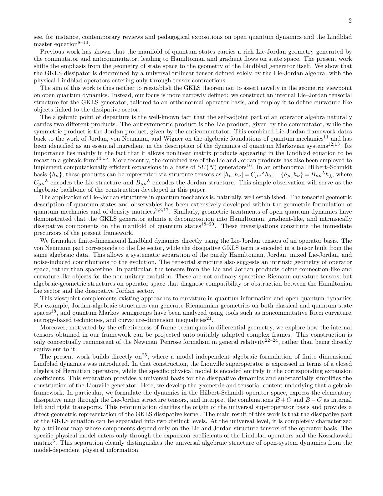
<figcaption class="paper-figure-caption"><b>Fig 1.</b> Low-resolution page preview, page 2</figcaption>
</figure>
<figure class="paper-figure-card">
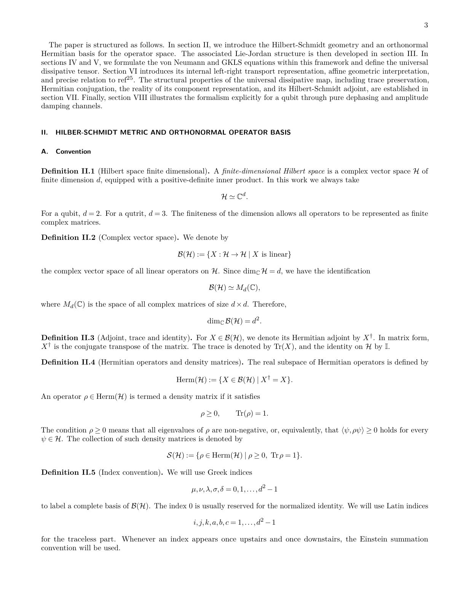
<figcaption class="paper-figure-caption"><b>Fig 2.</b> Low-resolution page preview, page 3</figcaption>
</figure>
<figure class="paper-figure-card">
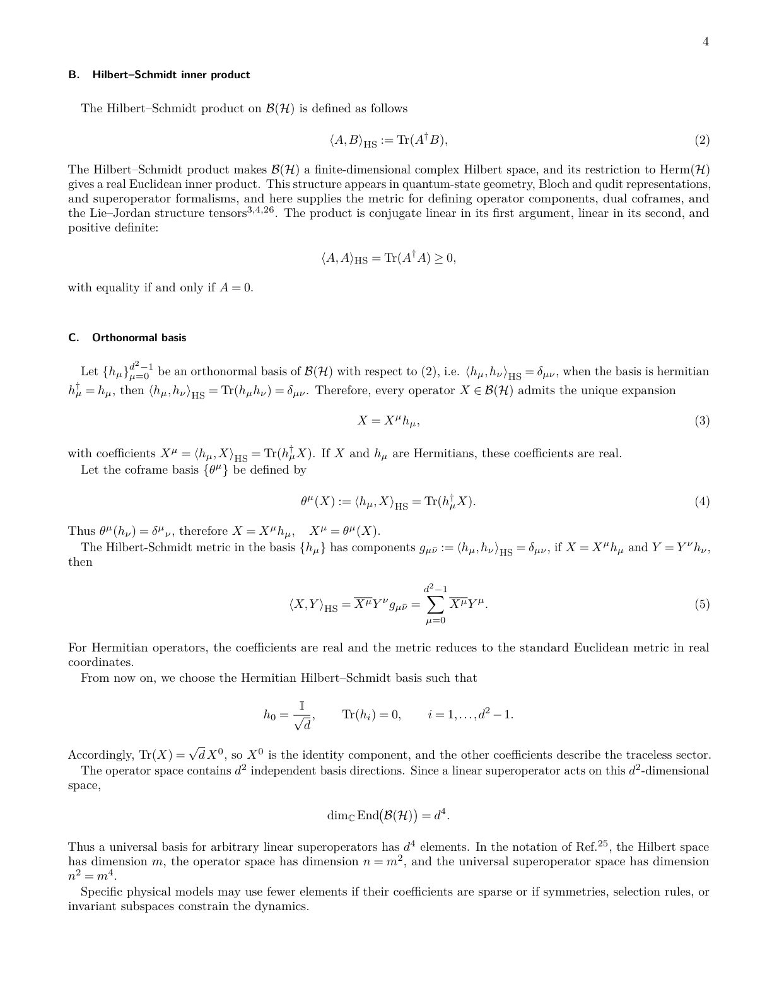
<figcaption class="paper-figure-caption"><b>Fig 3.</b> Low-resolution page preview, page 4</figcaption>
</figure>
<figure class="paper-figure-card">
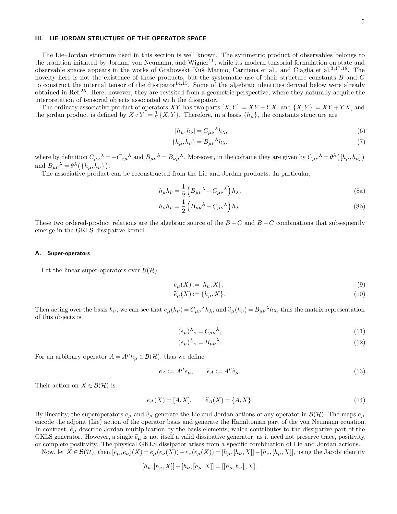
<figcaption class="paper-figure-caption"><b>Fig 4.</b> Low-resolution page preview, page 5</figcaption>
</figure>
<figure class="paper-figure-card">
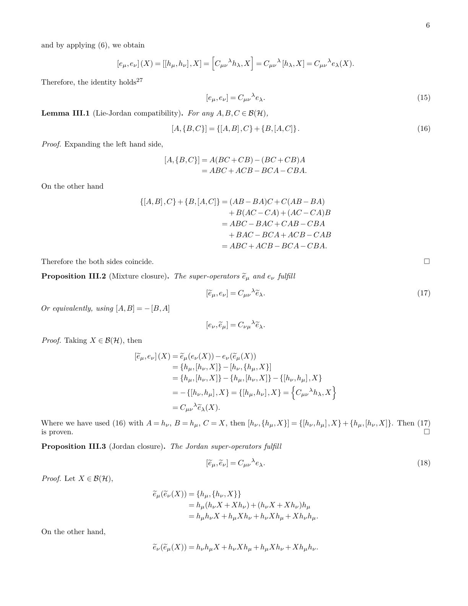
<figcaption class="paper-figure-caption"><b>Fig 5.</b> Low-resolution page preview, page 6</figcaption>
</figure>
</div>

<p><strong>Summary.</strong> This paper establishes a Lie-Jordan geometric framework to analyze the complex dynamics of open quantum systems described by the Lindblad equation. It achieves this by identifying a universal trilinear map that governs dissipation, thereby mathematically separating the general algebraic structure from the specific physical parameters (like coupling strengths). This offers a powerful, geometrically rigorous tool for analyzing decoherence processes.</p>
<p><strong>Why it may be interesting.</strong> This work provides a deep structural understanding of open quantum evolution by mapping it onto established algebraic geometry (Lie-Jordan theory), which is highly valuable for developing systematic theories beyond standard phenomenological master equation approaches.</p>
<details>
<summary>Detailed structure</summary>
<p><strong>Main problem.</strong> To develop a rigorous, basis-independent geometric formulation for open quantum dynamics governed by the Lindblad master equation.</p>
<p><strong>Main result.</strong> The dissipative part of the GKLS equation is shown to be generated by a universal trilinear map, cleanly separating the model-dependent physical parameters from the underlying algebraic structure defined by Lie-Jordan tensors.</p>
<p><strong>Method.</strong> The authors employ an algebraic approach, representing operators in a Hilbert-Schmidt basis and utilizing the inherent Lie and Jordan structures (commutator and anticommutator) to decompose the dynamics into universal tensor components.</p>
<p><strong>Model / system.</strong> The system is general open quantum systems described by density matrices ($
ho$) evolving under the Gorini-Kossakowski-Lindblad-Sudarshan (GKLS) equation. The formalism is tested on qubits undergoing pure dephasing and amplitude damping.</p>
<p><strong>Key observables.</strong> Trace preservation, Hermiticity of the dissipator, component representations of the evolution equations ($\dot{
ho}_\lambda$), and the structure tensors ($C_{\mu
u\lambda}, B_{\mu
u\lambda}$).</p>
<p><strong>Important parameters / regimes.</strong> Lindblad operators ($L_\alpha$) and the Kossakowski matrix ($\gamma_{\alphaeta}$), which define the model-specific dissipation.</p>
<p><strong>Assumptions / limitations.</strong> The dynamics are assumed to be Markovian, trace-preserving, and governed by the GKLS equation structure.</p>
<p><strong>Figures summary.</strong> Not specified in detail, but the notes mention specific resulting real matrices for dephasing and amplitude damping channels.</p>
<p><strong>Paper structure.</strong> The paper builds from defining the Lie-Jordan algebraic framework on the operator space to deriving a universal trilinear dissipative map. It then proves key properties like trace preservation and Hermiticity restoration before applying the formalism to concrete qubit examples, confirming the separation of universal algebra from physical input.</p>
</details>
<details>
<summary>Abstract</summary>
<p>We develop a Lie-Jordan geometric formulation of finite-dimensional open quantum dynamics, building on the algebraic framework introduced in our previous work (arXiv:2606.26477). The Hilbert-Schmidt operator space is endowed with an orthonormal Hermitian basis, in which the commutator and anticommutator are encoded by the structure tensors \(C_{μν}{}^λ\) and \(B_{μν}{}^λ\). Within this formulation, the von Neumann and Gorini-Kossakowski-Lindblad-Sudarshan equations admit a direct component representation. Our central result is the identification of a basis-independent universal trilinear dissipative map, \( \mathcal D(X,Y)Z=XZY-\frac12\{YX,Z\}, \) whose components define a universal operator-space tensor depending only on the Lie-Jordan structure tensors. The physical dissipator is obtained by contracting this tensor with the expansion coefficients of the Lindblad operators and the Kossakowski matrix, thereby separating the universal algebraic structure from the model-dependent physical information. We further show that the combinations \((B+C)\) and \((B-C)\) generate internal left and right transports, allowing the elementary dissipative map to be expressed as a left-right bimodule action corrected by an ordered Jordan contribution. The universal map satisfies basis-independent trace and Hermitian-conjugation identities, from which trace preservation, Hermiticity preservation of the complete dissipator, and the reality of its component representation in a Hermitian Hilbert-Schmidt basis follow. We also derive its Hilbert-Schmidt adjoint and illustrate the formalism for a qubit with pure dephasing and amplitude-damping channels. This construction provides a tensorial and affine-geometric interpretation of the universal superoperator structure derived in arXiv:2606.26477 while keeping the algebraic and model-dependent sectors explicitly separated.</p>
</details>
<p><sub><a href="#top">↑ back to top</a></sub></p>

<p><a id="paper-2607.04021"></a></p>
<h3 id="detection-methods-for-optimal-target-reflectivity-estimation-with-two-mode-squeezed-vacuum-probes"><a href="http://arxiv.org/abs/2607.04021v1">Detection methods for optimal target reflectivity estimation with two-mode squeezed vacuum probes</a></h3>
<p><strong>Authors:</strong> Harel Radia, Tuvia Gefen, Nadav Katz<br>
<strong>Type:</strong> theory · <strong>Category:</strong> quantum information and computing · <strong>PDF:</strong> <a href="https://arxiv.org/pdf/2607.04021v1">https://arxiv.org/pdf/2607.04021v1</a><br>
<strong>Analysis basis:</strong> full PDF text, analyzed in chunks
<strong>Topic relevance:</strong> <code>quantum measurements</code> <strong>3/5</strong> · <code>entanglement &amp; information structure</code> <strong>2/5</strong> · <code>measurement-induced transitions</code> <strong>2/5</strong> · <code>Keldysh / 2PI / non-Gaussian methods</code> <strong>1/5</strong> · <code>correlated / nonlocal dissipation</code> <strong>1/5</strong> · <code>driven-dissipative phase transition</code> <strong>1/5</strong> · <code>methods for driven-dissipative</code> <strong>1/5</strong></p>
<div class="figure-strip-hint">↔ Scroll figures horizontally</div>
<div class="paper-figures-scroll">
<figure class="paper-figure-card">

<figcaption class="paper-figure-caption"><b>Fig 1.</b> FIG. 1: Phase-space projections of the output state for nβ ≈2.32 (T ≈0.667 K at 5 GHz) and nr = 1, across various target reflectivities η. The green line indicates the vacuum state for reference. The black, blue and red lines correspond to η = 0, 0.5 and 1 respectively.</figcaption>
</figure>
<figure class="paper-figure-card">

<figcaption class="paper-figure-caption"><b>Fig 2.</b> Fig. 1 shows phase-space projections of the output state onto various subspaces for different values of η, and</figcaption>
</figure>
<figure class="paper-figure-card">

<figcaption class="paper-figure-caption"><b>Fig 3.</b> FIG. 2: Dependence of the smallest symplectic eigen- value ε−on the squeezing parameter nr, plotted for var- ious values of the photon number difference ∆n. Solid blue curves indicate the entangled regime (∆n &lt; 0). Solid red curves correspond to the separable regime (∆n &gt; 0). For reference, the dashed curves depict the limiting cases of perfect reflection (η →1, blue) and total loss (η →0, red).</figcaption>
</figure>
<figure class="paper-figure-card">

<figcaption class="paper-figure-caption"><b>Fig 4.</b> FIG. 3: (a),(b) QFI and local homodyne FI as a function of nr, for different values of nβ, with (a) η = 0.9 and (b) η = 0.1. The dashed, black vertical line represents the crossover point of nr = nη, in which the dependence on nβ changes. (c) QFI and local homodyne FI as a function of η, for nβ ≈2.32, and different values of nr.</figcaption>
</figure>
<figure class="paper-figure-card">
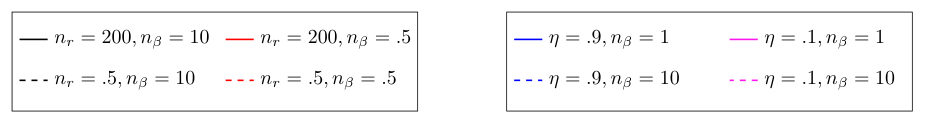
<figcaption class="paper-figure-caption"><b>Fig 5.</b> FIG. 4: (a) The ratio R = Icoh/I as a function of reflectivity η, (b) R as a function of nr. The TMSV QFI is always larger, and thus R ≤1, where the maximal gap is at larger η. (c) R = Icoh/Ih,local as a function of reflectivity η (d) and mean photon number nr. The gray line corresponds to R = 1.</figcaption>
</figure>
</div>

<p><strong>Summary.</strong> This paper analyzes the precision limits for estimating target reflectivity using squeezed vacuum probes. It shows that while ideal estimation requires complex measurements, suitable non-local Gaussian measurements can still achieve near-optimal performance. This provides crucial theoretical guidance for designing practical quantum sensing protocols in lossy media.</p>
<p><strong>Why it may be interesting.</strong> This work is highly relevant for quantum optics and open quantum systems as it rigorously quantifies how non-local measurements are required to approach the fundamental quantum limit in realistic noisy environments like microwave platforms.</p>
<details>
<summary>Detailed structure</summary>
<p><strong>Main problem.</strong> The paper investigates the theoretical limits for estimating an unknown target reflectivity parameter ($\eta$) using a Two-Mode Squeezed Vacuum (TMSV) probe.</p>
<p><strong>Main result.</strong> Near-optimal quantum estimation is achievable even when restricted to Gaussian measurements, demonstrating structural transitions in optimal measurement strategies depending on the reflectivity regime.</p>
<p><strong>Method.</strong> The analysis employs tools from quantum estimation theory, including the Symmetric Logarithmic Derivative (SLD) operator and comparing Quantum Fisher Information (QFI) against local homodyne detection FI.</p>
<p><strong>Model / system.</strong> The system models a TMSV probe interacting with a target via a thermal-loss channel. The physics is described using Gaussian quantum states characterized by covariance matrices.</p>
<p><strong>Key observables.</strong> Quantum Fisher Information (QFI), Local Homodyne Detection Fisher Information ($I_{h,	ext{local}}$), and the smallest symplectic eigenvalue ($\epsilon_{-}$) which diagnoses entanglement.</p>
<p><strong>Important parameters / regimes.</strong> Reflectivity $\eta \in [0, 1]$, squeezing parameter $r$, thermal mean photon number $n_eta$, and the noise difference $\Delta n$.</p>
<p><strong>Assumptions / limitations.</strong> The analysis often assumes known background noise ($n_eta$) and probe parameters ($n_r$), and compares theoretical bounds against practical Gaussian measurement restrictions.</p>
<p><strong>Figures summary.</strong> Figures illustrate phase-space projections of the output state for varying reflectivity ($\eta$) and show how entanglement ($\epsilon_{-}$) transitions between regimes based on system parameters.</p>
<p><strong>Paper structure.</strong> The paper progresses by first establishing the optimal measurements using SLD, then comparing QFI to local measurement FI across various asymptotic limits (high/low $\eta$), and finally calculating total FI using heterodyne/homodyne combinations.</p>
</details>
<details>
<summary>Abstract</summary>
<p>Target reflectivity estimation using a two-mode squeezed vacuum (TMSV) probe offers a theoretical advantage over classical schemes, but realizing this potential under the measurement constraints of microwave platforms remains a central challenge. In this work, we study the precision limits for target reflectivity estimation across different energy and loss regimes, while accounting for realistic measurement restrictions. We characterize the optimal measurements and identify a transition in their structure: above a specific reflectivity threshold, a parametric amplifier receiver is optimal, whereas below it, the optimal observables are two-mode squeezing generators. We then study the performance of Gaussian measurements. When restricted to standard local homodyne detection, the TMSV probe is highly non-optimal. However, we show that suitable non-local Gaussian measurements can closely approach the quantum Cramér-Rao bound at the large noise limit. These results demonstrate that near-optimal quantum target reflectivity estimation is achievable in various relevant noisy regimes, even under the restriction of Gaussian measurements.</p>
</details>
<p><sub><a href="#top">↑ back to top</a></sub></p>

<p><a id="paper-2607.03722"></a></p>
<h3 id="free-energies-and-optimal-reaction-coordinates-via-entropy-production"><a href="http://arxiv.org/abs/2607.03722v1">Free energies and optimal reaction coordinates via entropy production</a></h3>
<p><strong>Authors:</strong> Jérémy Diharce, Line Mouaffac, Axel Dian, Fabio Pietrucci<br>
<strong>Type:</strong> theory · <strong>Category:</strong> statistical mechanics · <strong>PDF:</strong> <a href="https://arxiv.org/pdf/2607.03722v1">https://arxiv.org/pdf/2607.03722v1</a><br>
<strong>Analysis basis:</strong> full PDF text, analyzed in chunks
<strong>Topic relevance:</strong> <code>methods for driven-dissipative</code> <strong>3/5</strong> · <code>non-equilibrium dynamics</code> <strong>2/5</strong> · <code>non-equilibrium universality</code> <strong>2/5</strong> · <code>Keldysh / 2PI / non-Gaussian methods</code> <strong>1/5</strong> · <code>correlated / nonlocal dissipation</code> <strong>1/5</strong> · <code>driven-dissipative phase transition</code> <strong>1/5</strong> · <code>quantum measurements</code> <strong>1/5</strong></p>
<div class="figure-strip-hint">↔ Scroll figures horizontally</div>
<div class="paper-figures-scroll">
<figure class="paper-figure-card">
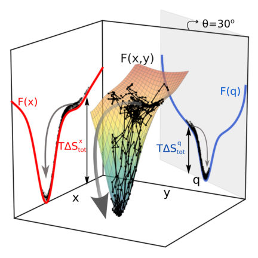
<figcaption class="paper-figure-caption"><b>Fig 1.</b> Figure 1. Illustrative example of the connection between relaxation processes, entropy production, and free-energy dif- ferences. Several trajectories are shown, evolving on a free- energy landscape F(x, y) from an initial state (high free en- ergy) to a final state (low free energy). According to ther- modynamics, any spontaneous relaxation process entails an increase in total entropy T∆Stot = −∆F. However, when observed from the viewpoint of a generic single variable q, the free-energy drop and the entropy production appear re- duced from the true value, due to properties of the marginal probability density ρ(q) = e−βF (q)/Z, unless an optimal pro- jection coordinate (here x) is employed.</figcaption>
</figure>
<figure class="paper-figure-card">
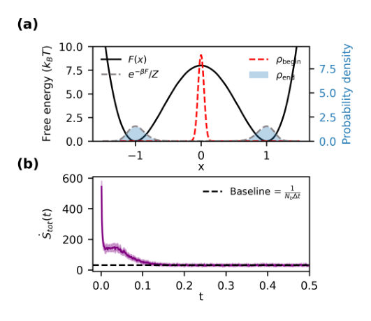
<figcaption class="paper-figure-caption"><b>Fig 2.</b> Figure 2. (a) One-dimensional free energy landscape F(x) = 8(x2 −1)2 with the initial and final distributions (compared with the equilibrium density) of Langevin trajectories initi- ated at x = 0. (b) EPR estimated from the trajectories. the darker line and the shaded area represent, respectively, the mean and the standard deviation computed over 20 indepen- dent blocks of 1000 trajectories.</figcaption>
</figure>
<figure class="paper-figure-card">
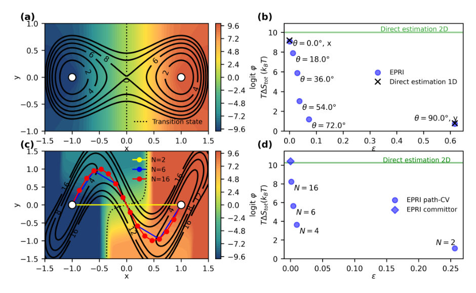
<figcaption class="paper-figure-caption"><b>Fig 3.</b> Figure 3. (a) Double well free-energy landscape with committor φ(x, y) aligned with the x direction (see Supplemental Material for details). Free-energy isolines are in black, while the color-scale refers to the committor. (b) Total entropy production ∆Stot, estimated with the EPRI approach over 2·104 trajectories relaxing from the transition state, and distance ϵ from the committor for a set of linear CVs forming an angle θ with the x direction. Reference values, indicated by black crosses and the green line, are obtained from direct estimation of −β∆F = log(Pend/Pbegin). (c) N-shaped double well with three path-CVs of increasing number of nodes N (see Supplemental Material for details)....</figcaption>
</figure>
<figure class="paper-figure-card">
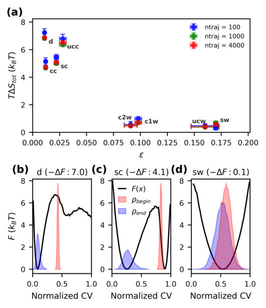
<figcaption class="paper-figure-caption"><b>Fig 4.</b> Figure 4. (a) Total entropy production ∆Stot of fullerene dimer association trajectories relaxing from the transition state, as observed with different coordinates (see main text for definitions), and distance ϵ of the latter from the com- mittor. Error bars are estimated using 5 blocks of trajecto- ries. Free-energy profiles from brute-force MD for three co- ordinates: (b) d, (c) sc and (d) sw. Coordinates are shifted and scaled between 0 and 1. The initial and final probabil- ity densities of the relaxation process are shown in red and blue, respectively. The free-energy drop estimated directly as −β∆F = log(Pend/Pbegin) from F(q) integration (See Sup- plemental Material for details) is...</figcaption>
</figure>
<figure class="paper-figure-card">
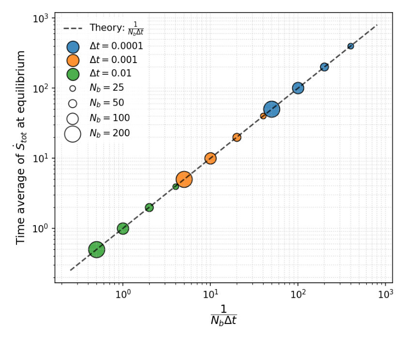
<figcaption class="paper-figure-caption"><b>Fig 5.</b> Figure 5. Measured entropy production rate of equilibrium trajectories, varying the number of points per bin Nb and the timestep ∆t. Data points represent the time average over 1500 steps of 10000 independent trajectories sampling the equilibrium ensemble of an Ornstein-Uhlenbeck process where F(q) = −q and D = 1. Because the true EPR at equilibrium is identically zero, the non-zero measured values stem entirely from finite-data bias, collapsing onto the predicted scaling law ˙Stot = 1/(Nb∆t).</figcaption>
</figure>
</div>

<p><strong>Summary.</strong> This paper introduces a method to estimate free-energy barriers and find optimal reaction coordinates by analyzing the total entropy production ($\Delta S_{tot}$) during molecular dynamics simulations. By leveraging stochastic energetics, the authors show that $\Delta S_{tot}$ calculated from short trajectories provides an accurate measure of the free energy difference, even in complex, high-dimensional systems like nanoparticles in water.</p>
<p><strong>Why it may be interesting.</strong> The direct connection established between the second law of thermodynamics ($\Delta S_{tot}$) and free energy landscapes provides an alternative, potentially more robust, pathway for calculating reaction barriers than traditional methods relying solely on potential energy surfaces or sampling equilibrium distributions.</p>
<details>
<summary>Detailed structure</summary>
<p><strong>Main problem.</strong> The work aims to estimate free-energy barriers and identify optimal reaction coordinates for activated processes by calculating total entropy production ($\Delta S_{tot}$) from short molecular dynamics trajectories.</p>
<p><strong>Main result.</strong> Calculating $\Delta S_{tot}$ via stochastic energetics provides a robust method that successfully estimates free-energy barriers, with the committor function yielding results consistent with theoretical expectations.</p>
<p><strong>Method.</strong> The core methodology involves applying stochastic energetics to Langevin trajectories to calculate $\Delta S_{tot}$, which is related to the free energy difference ($\Delta F$) by $\Delta F = -T\Delta S_{tot}$.</p>
<p><strong>Model / system.</strong> Benchmarks include 1D double-well potentials and 2D systems, culminating in a complex test case: carbon nanoparticles (C60) interacting with water molecules.</p>
<p><strong>Key observables.</strong> Total entropy production ($\Delta S_{tot}$), free energy profile ($eta F(q)$), committor probability ($\phi$), and the ratio $\log(P_{end}/P_{begin})$.</p>
<p><strong>Important parameters / regimes.</strong> Temperature (T=300 K), time step ($\Delta t$), and the relationship between entropy production and free energy barriers.</p>
<p><strong>Assumptions / limitations.</strong> The analysis assumes the system operates in the overdamped regime, and when projecting to a single coordinate, it assumes fast equilibration of orthogonal degrees of freedom.</p>
<p><strong>Figures summary.</strong> Figures illustrate the connection between relaxation dynamics, $\Delta S_{tot}$, and free-energy differences; they compare $\Delta S_{tot}$ estimates from various coordinates against the committor probability, confirming its optimality.</p>
<p><strong>Paper structure.</strong> The paper progresses by establishing the theoretical link ($\Delta F = -T\Delta S_{tot}$) using stochastic energetics on simple benchmarks (1D double-well), then extending this to multi-dimensional systems and finally applying it to a complex biomolecular system like C60 in water.</p>
</details>
<details>
<summary>Abstract</summary>
<p>We show through theory and numerical experiments that a straightforward calculation of entropy production on short molecular dynamics trajectories allows estimating free-energy barriers and identifying optimal reaction coordinates of activated processes. To this aim, we perform an analysis based on stochastic energetics on a set of trajectories relaxing towards equilibrium from a same initial configuration, projected on different putative coordinates. After demonstrating the approach on simple benchmarks, we show that it is possible to estimate the free-energy barrier of a complex high-dimensional system (carbon nanoparticles in water) and to rank the quality of order parameters, in agreement with the committor probability. The results shed light on the entanglement between the second law, free-energy landscapes, reaction coordinates and kinetic rates.</p>
</details>
<p><sub><a href="#top">↑ back to top</a></sub></p>

<p><a id="paper-2607.03608"></a></p>
<h3 id="the-informational-cost-of-structure-representational-complexity-in-networked-dynamical-systems"><a href="http://arxiv.org/abs/2607.03608v1">The Informational Cost of Structure: Representational Complexity in Networked Dynamical Systems</a></h3>
<p><strong>Authors:</strong> Cyril Rommens, Pietro Traversa, Guilherme Ferraz de Arruda, Yamir Moreno<br>
<strong>Type:</strong> theory · <strong>Category:</strong> statistical mechanics · <strong>PDF:</strong> <a href="https://arxiv.org/pdf/2607.03608v1">https://arxiv.org/pdf/2607.03608v1</a><br>
<strong>Analysis basis:</strong> full PDF text, analyzed in chunks
<strong>Topic relevance:</strong> <code>entanglement &amp; information structure</code> <strong>3/5</strong> · <code>analog quantum simulation</code> <strong>2/5</strong> · <code>non-equilibrium dynamics</code> <strong>2/5</strong> · <code>correlated / nonlocal dissipation</code> <strong>1/5</strong> · <code>correlated cavity matter</code> <strong>1/5</strong> · <code>driven-dissipative phase transition</code> <strong>1/5</strong> · <code>non-equilibrium universality</code> <strong>1/5</strong></p>
<div class="figure-strip-hint">↔ Scroll figures horizontally</div>
<div class="paper-figures-scroll">
<figure class="paper-figure-card">

<figcaption class="paper-figure-caption"><b>Fig 1.</b> FIG. 1. Schematic decomposition of the complexity contributions of the graph and hypergraph representations under Assump- tions 1 and 2, which place them in the equivalence regime.</figcaption>
</figure>
</div>

<p><strong>Summary.</strong> This theoretical work quantifies the informational overhead associated with choosing a model representation (like graph vs. hypergraph) for describing dynamical systems. By using algorithmic information theory, it shows that when interactions are inherently multi-body ($k \ge 3$), forcing them into a simple pairwise structure leads to an unrecoverable loss of information and thus a higher computational cost.</p>
<p><strong>Why it may be interesting.</strong> The concept of 'informational cost' for structure selection directly relates to identifying the minimal set of physical constraints needed to describe a complex system, which is crucial in modeling emergent behavior in many-body quantum systems or classical statistical mechanics models.</p>
<details>
<summary>Detailed structure</summary>
<p><strong>Main problem.</strong> The paper addresses the informational cost required to represent a complex dynamical system using an explicit interaction structure (like graphs or hypergraphs) coupled with an evolution rule.</p>
<p><strong>Main result.</strong> Representational Complexity quantifies this cost, showing that for genuinely many-body interactions ($k \ge 3$), forcing the model into a pairwise graph representation incurs a measurable and non-zero informational penalty compared to using the native hypergraph structure.</p>
<p><strong>Method.</strong> The authors employ Algorithmic Information Theory (Kolmogorov Complexity) to define Representational Complexity, comparing description lengths between different structural models (e.g., Graph vs. Hypergraph).</p>
<p><strong>Model / system.</strong> The analysis focuses on finite Boolean dynamical maps $F: \{0, 1\}^N 	o \{0, 1\}^N$ operating on networked systems. The comparison is drawn between pairwise interactions (graphs) and higher-order interactions (hypergraphs).</p>
<p><strong>Key observables.</strong> Representational Complexity ($ ext{RC}$), the difference in description length ($\Delta L$) between graph and hypergraph models.</p>
<p><strong>Important parameters / regimes.</strong> The order of interaction ($k$), system size ($N$), and the number/type of interactions ($M$).</p>
<p><strong>Assumptions / limitations.</strong> Kolmogorov complexity is uncomputable, necessitating the use of computable description-length surrogates; equivalence results are conditional on specific structural recoverability assumptions.</p>
<p><strong>Figures summary.</strong> The notes detail comparisons showing $\Delta L < 0$ (Graph preferred) for certain structures and $\Delta L > 0$ (Hypergraph preferred) when interactions require more than pairwise connections, such as in the clique expansion example.</p>
<p><strong>Paper structure.</strong> The paper establishes Representational Complexity ($   ext{RC}$) as a fundamental measure. It first shows that expressiveness alone is insufficient to distinguish model types. Subsequently, it provides explicit comparisons (e.g., Graph vs. Hypergraph) demonstrating when structural assumptions lead to quantifiable informational overhead.</p>
</details>
<details>
<summary>Abstract</summary>
<p>How much information is required to represent a dynamical system in terms of an interaction structure and an evolution rule? We address this question using algorithmic information theory. We introduce Representational Complexity, the excess description length of a structure-plus-rule model relative to the shortest possible description of the dynamics itself. This intrinsic description defines a universal lower bound: no exact structural representation can be more concise. If arbitrary rules are allowed, graphs, hypergraphs, and other formalisms can all reach this bound by shifting information between structure and dynamics, so expressiveness alone cannot distinguish them. Meaningful differences arise only when scientific modeling restricts the admissible structures and rules. Within this setting, we identify conditions under which graph and hypergraph descriptions are informationally equivalent, and show how graph-preferred, hypergraph-preferred, and mixed regimes can emerge when those conditions are relaxed. Because Kolmogorov complexity is not computable, we complement the formal results with explicit description-length estimates. Our framework reframes the choice of network representation as a question of informational cost and mechanistic transparency rather than universal expressive power.</p>
</details>
<p><sub><a href="#top">↑ back to top</a></sub></p>

<p><a id="paper-2607.03867"></a></p>
<h3 id="the-reweighting-principle-in-statistical-mechanics"><a href="http://arxiv.org/abs/2607.03867v1">The Reweighting Principle in Statistical Mechanics</a></h3>
<p><strong>Authors:</strong> Salvatore Romano<br>
<strong>Type:</strong> theory · <strong>Category:</strong> statistical mechanics · <strong>PDF:</strong> <a href="https://arxiv.org/pdf/2607.03867v1">https://arxiv.org/pdf/2607.03867v1</a><br>
<strong>Analysis basis:</strong> full PDF text, analyzed in chunks
<strong>Topic relevance:</strong> <code>entanglement &amp; information structure</code> <strong>3/5</strong> · <code>non-equilibrium dynamics</code> <strong>2/5</strong> · <code>non-equilibrium universality</code> <strong>2/5</strong> · <code>Keldysh / 2PI / non-Gaussian methods</code> <strong>1/5</strong> · <code>correlated / nonlocal dissipation</code> <strong>1/5</strong> · <code>driven-dissipative phase transition</code> <strong>1/5</strong> · <code>methods for driven-dissipative</code> <strong>1/5</strong></p>
<div class="figure-strip-hint">↔ Scroll figures horizontally</div>
<div class="paper-figures-scroll">
<figure class="paper-figure-card">

<figcaption class="paper-figure-caption"><b>Fig 1.</b> Figure 1: Schematic illustration of soft and hard reweighting. Exponential tilting (orange) modifies the reference ensemble (blue) smoothly through an exponential weight, while conditioning (green) selects a finite-resolution macrostate associated with a prescribed value of the observable. These two operations provide the probabilistic prototype for canonical and microcanonical constructions, respectively.</figcaption>
</figure>
</div>

<p><strong>Summary.</strong> This paper unifies statistical mechanics by showing that both canonical and microcanonical ensembles can be derived from the principle of minimum relative entropy. It treats soft constraints (exponential tilting) and hard constraints (conditioning) as mathematically related processes within an enlarged probability space. This framework provides a powerful, information-theoretic lens to understand ensemble equivalence in the thermodynamic limit.</p>
<p><strong>Why it may be interesting.</strong> The deep connection between information theory (relative entropy) and fundamental statistical ensembles provides a powerful, unified perspective applicable to understanding non-equilibrium dynamics via path integrals.</p>
<details>
<summary>Detailed structure</summary>
<p><strong>Main problem.</strong> To develop a unified probabilistic framework for statistical mechanics that connects conditioning, exponential tilting, and general ensemble transformations.</p>
<p><strong>Main result.</strong> The paper shows that both the canonical (soft constraint) and microcanonical (hard constraint) ensembles arise naturally from minimizing the relative entropy with respect to a common structural prior.</p>
<p><strong>Method.</strong> It employs information-theoretic tools, specifically minimum relative entropy minimization, applied in an enlarged probability space construction.</p>
<p><strong>Model / system.</strong> The study concerns statistical ensembles defined on a general probability space, comparing soft constraints (exponential tilting) to hard constraints (conditioning) via the observable A(x).</p>
<p><strong>Key observables.</strong> Gibbs entropy, Boltzmann entropy, relative entropy, and free energy potentials.</p>
<p><strong>Important parameters / regimes.</strong> The Lagrange multiplier $\lambda$ controlling the constraint strength; the thermodynamic limit ($N 	o \infty$).</p>
<p><strong>Assumptions / limitations.</strong> The analysis relies on treating observables as explicit variables in an enlarged space, and the equivalence of ensembles is shown via concentration of measure in the large-system limit.</p>
<p><strong>Figures summary.</strong> Figures schematically illustrate the difference between smooth exponential tilting (soft constraint) and state selection (hard constraint), while tables summarize the mathematical forms and resulting ensembles for both types of constraints.</p>
<p><strong>Paper structure.</strong> The paper builds from defining reweighting principles, showing how soft constraints yield canonical structures via relative entropy minimization, then introducing hard constraints yielding microcanonical structures. It unifies these by analyzing them in an enlarged space and demonstrating their equivalence in the thermodynamic limit, finally extending the framework to path space.</p>
</details>
<details>
<summary>Abstract</summary>
<p>Reweighting of probability measures provides a unifying perspective on conditioning, exponential tilting, and, more generally, ensemble transformations in statistical mechanics. We show that exponential tilting and conditioning arise as the minimum-relative-entropy updates associated with soft and hard constraints, respectively. Their relative entropies naturally inherit complementary thermodynamic structures: exponential tilting gives rise to the Legendre structure of the canonical ensemble and reduces to the Gibbs entropy for a uniform reference measure, while conditioning reduces to the Boltzmann entropy through the surprisal of the constrained macrostate. By introducing an enlarged probability space in which observables are treated as explicit variables, we further show that microcanonical and canonical ensembles arise as conditional and marginal distributions of a common structural prior after exponential reweighting. In the thermodynamic limit, described through large deviation theory, conditioning emerges from exponential tilting by concentration of measure, revealing ensemble equivalence as a consequence of entropy--bias competition. Finally, we outline how the same information-theoretic framework naturally extends to path space, suggesting a unified probabilistic description of equilibrium thermodynamics and conditioned stochastic dynamics.</p>
</details>
<p><sub><a href="#top">↑ back to top</a></sub></p>

<p><a id="paper-2607.04186"></a></p>
<h3 id="analytic-properties-of-cross-click-operators-in-passive-multi-basis-photodetection-monotonicity-exact-convergence-rates-and-dimension-reduction-for-quantum-key-distribution"><a href="http://arxiv.org/abs/2607.04186v1">Analytic properties of cross-click operators in passive multi-basis photodetection: monotonicity, exact convergence rates, and dimension reduction for quantum key distribution</a></h3>
<p><strong>Authors:</strong> Zhangdong Ye<br>
<strong>Type:</strong> theory · <strong>Category:</strong> quantum information and computing · <strong>PDF:</strong> <a href="https://arxiv.org/pdf/2607.04186v1">https://arxiv.org/pdf/2607.04186v1</a><br>
<strong>Analysis basis:</strong> full PDF text, analyzed in chunks
<strong>Topic relevance:</strong> <code>quantum measurements</code> <strong>3/5</strong> · <code>measurement-induced transitions</code> <strong>2/5</strong> · <code>Keldysh / 2PI / non-Gaussian methods</code> <strong>1/5</strong> · <code>correlated / nonlocal dissipation</code> <strong>1/5</strong> · <code>driven-dissipative phase transition</code> <strong>1/5</strong> · <code>entanglement &amp; information structure</code> <strong>1/5</strong> · <code>methods for driven-dissipative</code> <strong>1/5</strong></p>
<div class="figure-strip-hint">↔ Scroll figures horizontally</div>
<div class="paper-figures-scroll">
<figure class="paper-figure-card">
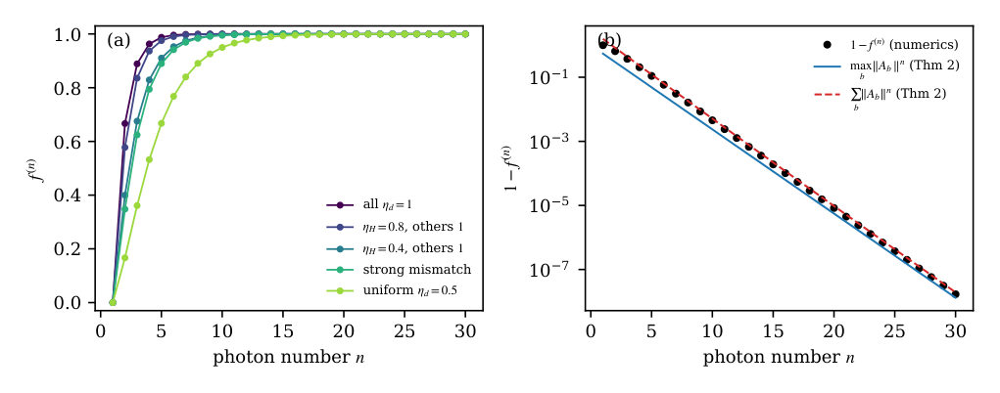
<figcaption class="paper-figure-caption"><b>Fig 1.</b> FIG. 2. (a) Minimum eigenvalue f (n) of the cross-click operator of the balanced passive six-state analyzer on the n-photon sector, for several detector-efficiency configurations, computed exactly by the symmetric-power algorithm of Sec. V. All curves are monotone, as guaranteed by Theorem 1; for ideal detectors the curve is exactly f (n) = 1 −31−n (Corollary 1). (b) Convergence 1−f (n) for the strongly mismatched configuration ⃗η = (0.9, 0.75, 1.0, 0.6, 0.85, 0.7) on a logarithmic scale, together with the two-sided bounds of Theorem 2. The exact values are squeezed between maxb∥Ab∥n and P</figcaption>
</figure>
<figure class="paper-figure-card">

<figcaption class="paper-figure-caption"><b>Fig 2.</b> FIG. 3. Joint minimum eigenvalue f (nA,nB) for two different mismatched six-state analyzers, evaluated from the exact fac- torization of Theorem 3, 1−f (nA,nB) = (1−f (nA) A )(1−f (nB) B ). The surface reproduces the structure obtained by direct nu- merical diagonalization in Ref. [25], including the exact coin- cidence of the nB = 0 and nB = 1 slices.</figcaption>
</figure>
</div>

<p><strong>Summary.</strong> This paper analytically characterizes the behavior of cross-click operators essential for bounding multiphoton contributions in QKD security proofs. By showing these operators are related to second quantization structures, the authors derive monotonicity and exact exponential convergence rates. These results replace complex Fock-space numerics with general formulas applicable to any passive linear-optical analyzer.</p>
<p><strong>Why it may be interesting.</strong> This work provides rigorous, closed-form analytical tools to analyze fundamental security limitations in quantum communication protocols that previously required computationally intensive numerical simulations.</p>
<details>
<summary>Detailed structure</summary>
<p><strong>Main problem.</strong> The paper aims to provide a sharp analytic characterization of cross-click operators used in security analyses for Quantum Key Distribution (QKD) when using realistic, lossy photodetection detectors.</p>
<p><strong>Main result.</strong> It establishes monotonicity ($f^{(n+1)}\ge f^{(n)}$), derives two-sided exponential bounds determining the exact asymptotic convergence rate, and provides an exact factorization for joint cross-click operators.</p>
<p><strong>Method.</strong> The core method involves relating the 'silence' operator to the second quantization of an explicit single-photon contraction, allowing the derivation of spectral properties from finite-dimensional matrix inequalities.</p>
<p><strong>Model / system.</strong> The system models passive multi-basis photodetection using linear optics followed by threshold detectors characterized by arbitrary efficiencies and dark counts. The analysis is performed on the infinite-dimensional Fock space.</p>
<p><strong>Key observables.</strong> Cross-click operators (POVM elements), minimum eigenvalue $f^{(n)}$ of the cross-click operator on the $n$-photon subspace, and joint surface $f(n_A, n_B)$.</p>
<p><strong>Important parameters / regimes.</strong> Detector efficiencies ($\eta_d$), dark-count probabilities ($\epsilon_d$), and the number of photons ($n$).</p>
<p><strong>Assumptions / limitations.</strong> The results assume independent dark counts and uncorrelated detection efficiencies; they are derived for any passive analyzer structure.</p>
<p><strong>Figures summary.</strong> Figure 1 illustrates a running example using a six-state polarization analyzer. Figure 2 shows $f(n)$ under varying efficiency mismatches, while Figure 3 displays the joint surface $f(n_A, n_B)$ as an exact formula.</p>
<p><strong>Paper structure.</strong> The paper builds from defining the cross-click operator using POVMs to establishing structural theorems: first proving monotonicity (Theorem 1), then deriving two-sided exponential bounds and the convergence rate (Theorem 2), followed by specific results for ideal detectors and joint operators (Corollaries/Theorem 3).</p>
</details>
<details>
<summary>Abstract</summary>
<p>Cross-click operators, the POVM elements for simultaneous clicks in detectors assigned to different measurement bases, are used in QKD and entanglement-verification analyses with realistic threshold detectors to bound multiphoton contributions. Earlier applications verified the needed growth of the minimum eigenvalue $f^{(n)}$ on the $n$-photon subspace only numerically over finite sectors. This work gives an analytic characterization for passive linear-optical analyzers with arbitrary efficiency mismatch and dark counts. The key observation is that every silence operator is the second quantization $Γ(A)$ of an explicit single-photon contraction $A$, whose $n$-photon restriction is $A^{\otimes n}$ on $\mathrm{Sym}^n$. This yields: (i) monotonicity $f^{(n+1)}\ge f^{(n)}$; (ii) two-sided exponential bounds $\max_b γ_b|A_b|^n \le 1-f^{(n)} \le \sum_b γ_b|A_b|^n$, which determine the exact asymptotic convergence rate from single-photon spectral data; (iii) for ideal detectors and $n\ge1$, the exact formula $f^{(n)}=1-\sum_b p_b^n$; and (iv) an exact factorization $1-f^{(n_A,n_B)}=(1-f_A^{(n_A)})(1-f_B^{(n_B)})$ for the two-party cross-click operator. The results apply to polarization, time-bin, and spatial-mode analyzers within the stated threshold-detector model. As an application, we obtain closed-form photon-number weight bounds used in detection-efficiency-mismatch analyses, replacing finite-sector Fock-space numerics by formulas valid for all photon numbers.</p>
</details>
<p><sub><a href="#top">↑ back to top</a></sub></p>
<hr>
<p>
<a href="index.html">← Index</a>
 · <a href="papers_03.html">← Previous</a> · <a href="papers_05.html">Next →</a>
</p>
<hr>

</body>
</html>
